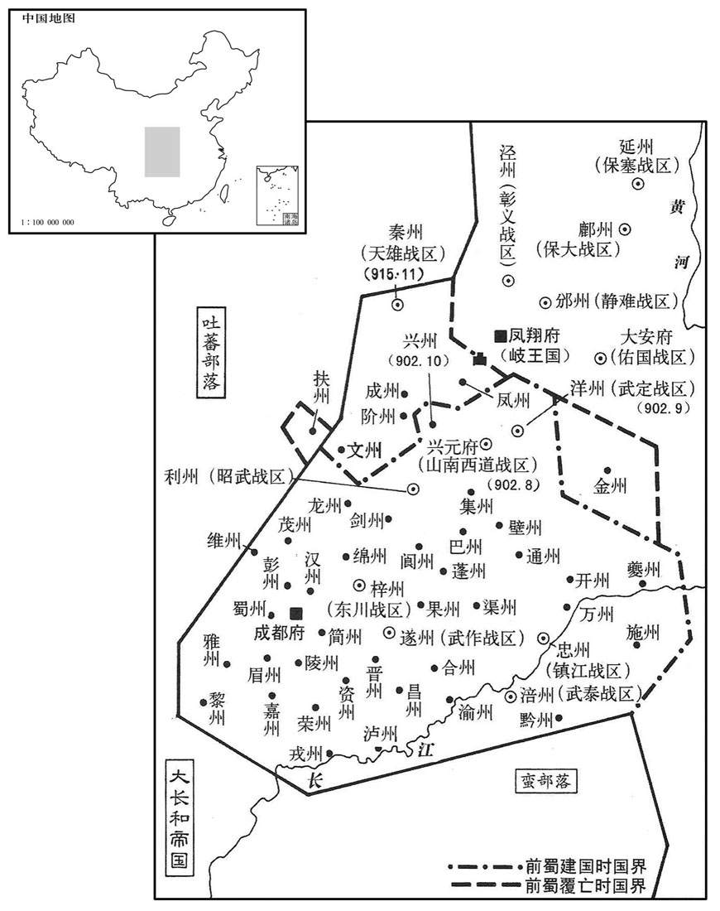
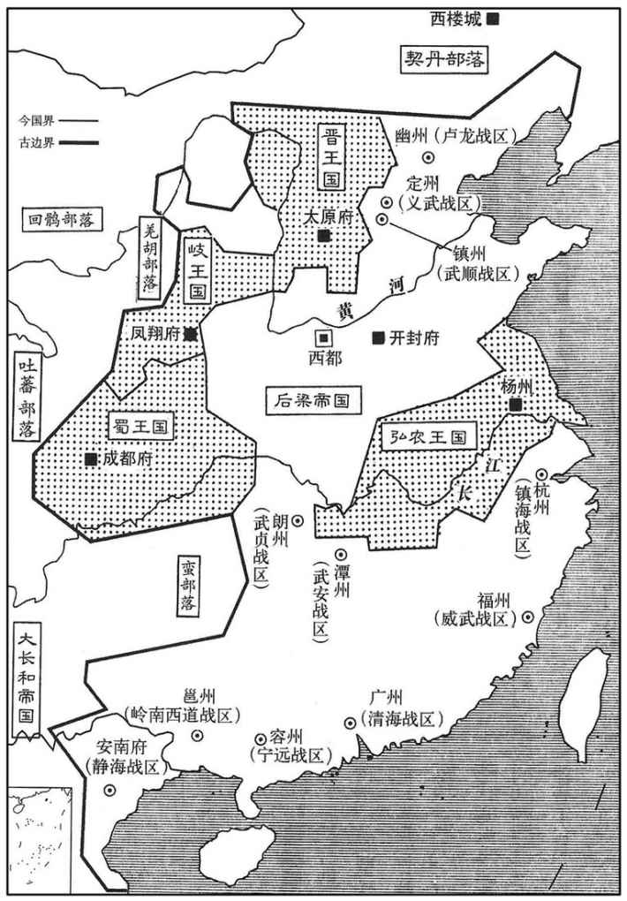
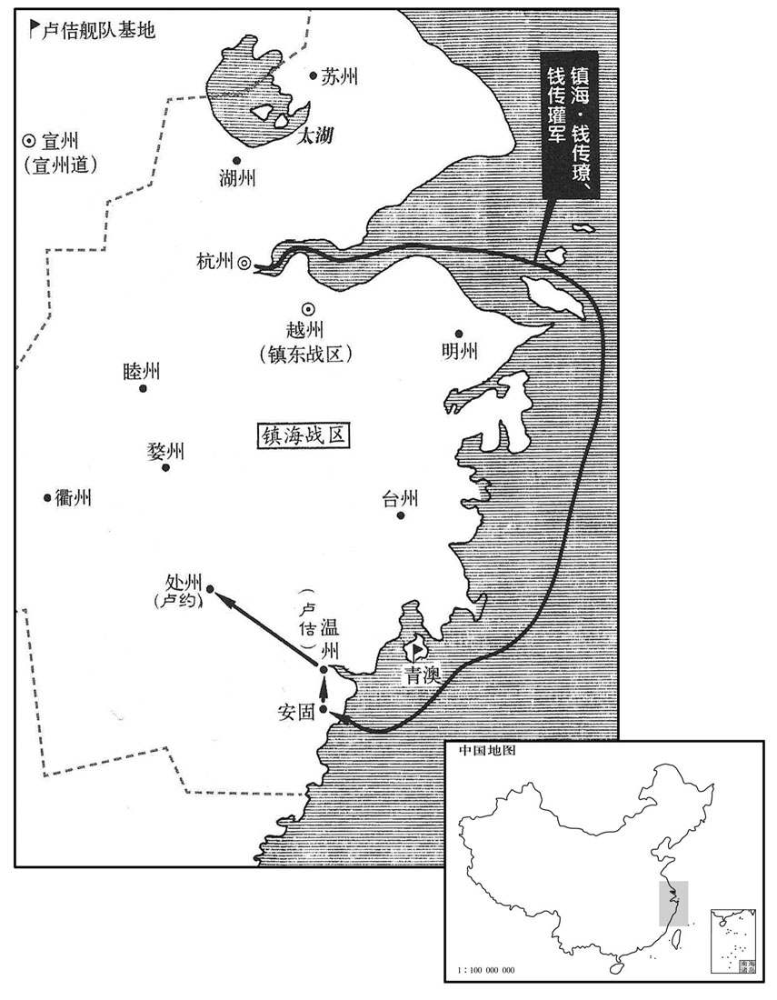
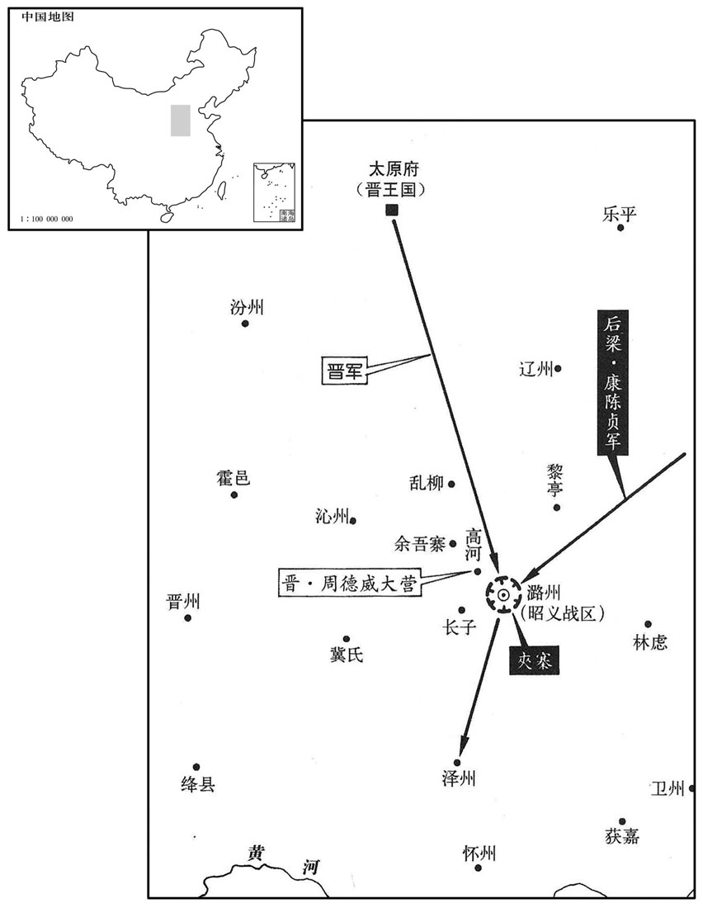
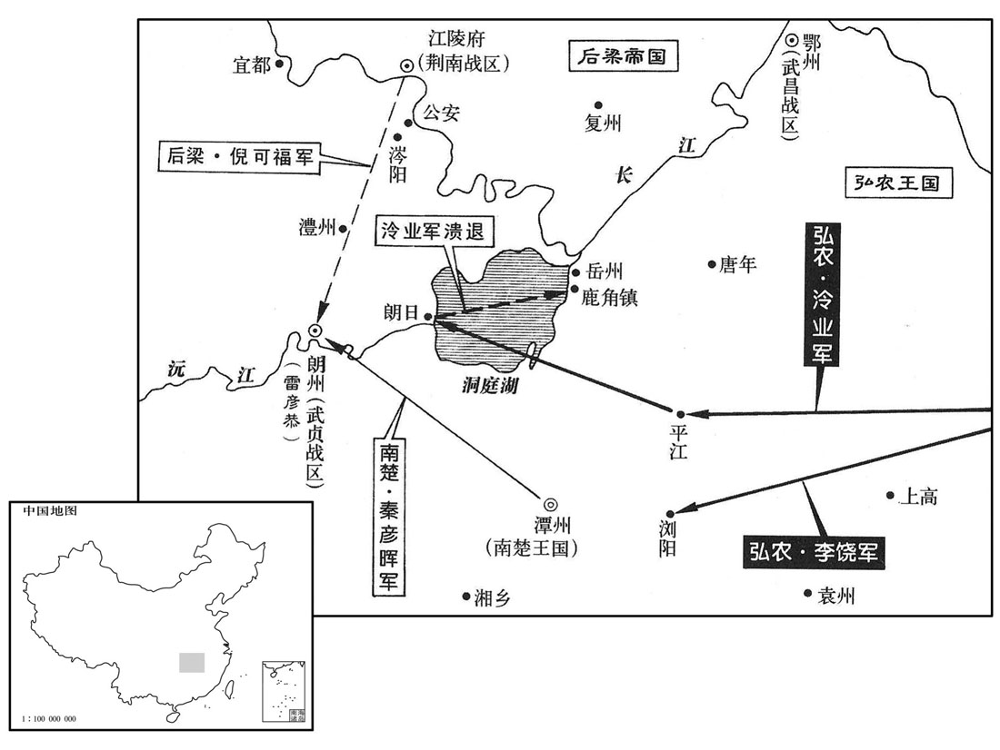
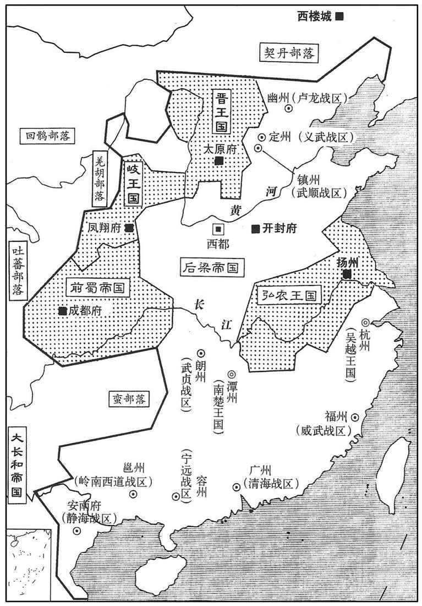
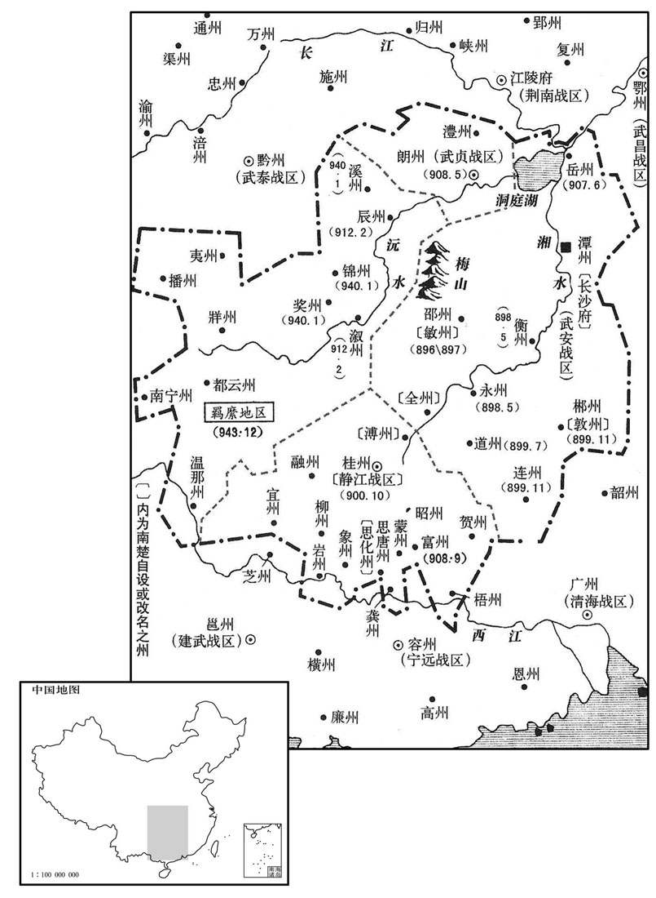
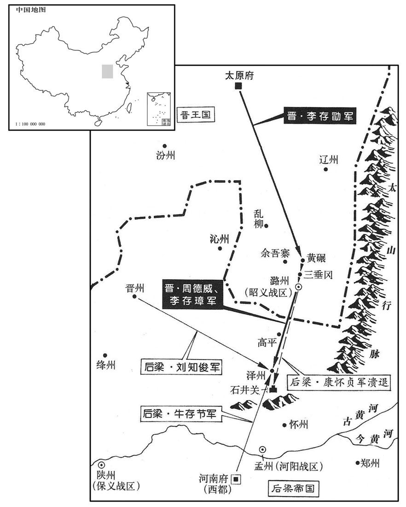
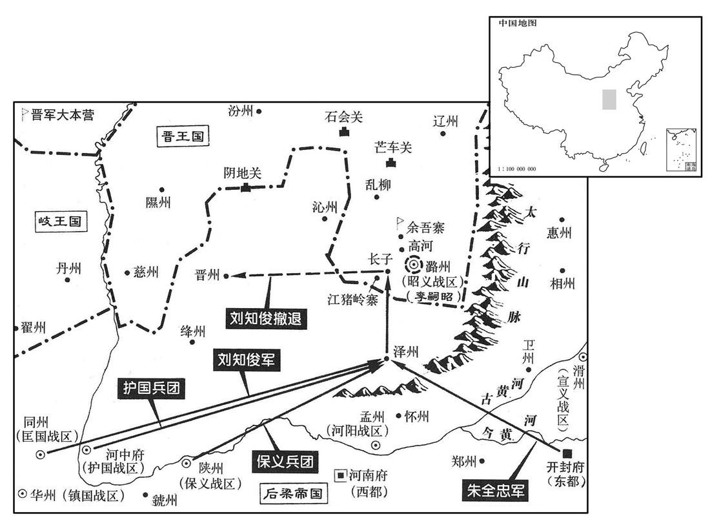

卷次与人物目录 / 卷266
资治通鉴 · 卷第二百六十六【后梁纪一】
公元907年至公元908年 · 原文、白话与胡三省注
本页按胡注本编排保存全卷内容。白话采用本站所据译本，未可靠对应的内容另列说明；事件标题用于定位，并非原书文字。
本卷共123段原文，122段有译文对应，1段缺译或待核对。
卷第二百六十六【后梁纪一】起强圉单阏（丁卯），尽着雍执徐（戊辰）七月，凡一年有奇。
卷首原文与注释
〔朱氏本砀山人。砀山，战国时属地。太祖以宣武节度使创业，宣武军治汴州，古大梁也；寖益强盛，进封梁王，国遂号曰梁。通鉴以前纪已有萧梁，故称曰后梁。〕
太祖神武元圣孝皇帝上〔姓朱氏，名温，宋州砀山午沟里人。背黄巢归唐，赐名全忠。即位，改名晃。〕
公元907年 · 后梁太祖神武元圣孝皇帝开平元年
开平元年〔（丁卯、九〇七）是年四月即位，始改元。〕
上传原文的注释括号有异常，字符原样保留；无法可靠划分的段落默认全文显示。
本年事件索引（现代整理）
- 梁王朱全忠驻兵贝州休整
- 杨渥因周隐斥责其卖国而杀之
- 吕师周率军驻上高后惧祸投奔马殷，綦章放其家属逃走
- 杨渥居丧纵乐并扩充亲信，张颢徐温密谋作乱
- 张颢徐温借诛朱思勍等亲兵发动兵谏，夺取军政
- 朱全忠因河北诸镇归服而幽沧未下，急欲受禅稳定人心
- 薛贻矩赴大梁以臣礼劝朱全忠受禅
- 朱全忠命康怀贞屯晋州防备河东军
- 唐大臣请昭宣帝逊位，朝臣藩镇接连劝进朱全忠
- 朱全忠任李思安为北路行军都统，出兵攻幽州
- 昭宣帝再遣薛贻矩赴大梁宣示禅位之意
- 钱镠遣子钱传褄、钱传瓘率军讨伐温州卢佶
- 昭宣帝下诏禅位于梁，安排册礼使与传国宝使
- 杨凝式劝父杨涉拒绝奉玺，杨涉惊惧不安
- 张策为敦煌人，赵光逄为赵隐之子
- 刘仁恭骄奢暴虐，在大安山建宫、敛钱炼丹并禁茶
- 刘守光因与父妾私通而被斥，后趁刘仁恭在山中夺取幽州并囚父
- 王思同、李承约率部投奔河东，刘守奇亦后奔河东
- 朱全忠始御金祥殿受百官称臣，命文书去唐年号
- 钱传瓘袭取温州斩卢佶，吴璋镇温州并奉命攻卢约
- 朱全忠改名朱晃，其兄朱全昱讥其将称帝
- 张文蔚等奉册宝至金祥殿，朱晃即皇帝位
- 朱全昱当面斥朱晃灭唐称帝，朱晃不悦而罢
- 朱晃告祭天地宗庙、改国号大梁并降唐帝为济阴王
- 梁太祖封马殷为楚王
- 敬翔掌崇政院，受梁太祖倚重参决军政
- 梁太祖追尊高祖以来先祖为帝后
- 梁太祖命养子朱友文掌建昌院，主管国家财谷
- 梁廷削夺李克用官爵，各镇多奉梁正朔
- 王建、杨渥檄告诸道欲兴复唐室，王建称帝之议遭李克用拒绝
- 晋王李克用恢复张承业为监军并厚待之
- 李茂贞不敢称帝，却仿帝制设官建宫并行礼仪
- 罗隐劝钱镠举兵讨梁并据两浙称帝，钱镠未从而敬重其忠
- 梁太祖任薛贻矩为中书侍郎、同平章事
- 梁太祖加王镕、罗绍威、王处直官爵
- 契丹遣袍笏梅老赴大梁通好，梁太祖遣高颀回访
- 契丹阿保机崛起并兼并诸部，势力扩展至室韦、女真、突厥故地及奚
- 阿保机率三十万攻云州，与晋王李克用会盟后背盟附梁
- 梁太祖封张全义为魏王、钱镠为吴越王，并加封刘隐、王审知
- 梁太祖任高季昌为荆南节度使，高季昌招集流民恢复民业
- 梁太祖封兄朱全昱及诸子为王
- 梁太祖以东都旧宅为建昌宫
- 梁太祖废枢密院，将事务并入崇政院
- 苏循父子自恃禅代之功求高位，梁太祖令苏循等致仕并斥苏楷归田
- 卢约以处州归降吴越
- 杨渥遣刘存等率水军攻楚，马殷因敌军骄轻而料其必败
- 秦彦晖与黄璠夹击淮南军，大破刘存陈知新并夺岳州
- 马殷派兵会同彭玕攻洪州未克
- 康怀贞围攻潞州，李嗣昭等坚守待援
- 晋军攻泽州，梁太祖遣范居实率军救援
- 梁太祖任韩建为司徒、同平章事
- 雷彦恭会楚军攻江陵，高季昌断其粮道击退之
- 刘守光自称卢龙留后，梁廷任其为节度使
- 曲裕去世，梁廷任其子曲颢为静海节度使
- 雷彦恭攻岳州未克
- 梁太祖赐河南尹张全义名为张宗奭
- 梁太祖任钱镠兼淮南节度使、马殷兼武昌节度使
- 周德威在高河扎营，秦武率梁军袭击失利
- 梁太祖以李思安代康怀贞为潞州行营都统，筑夹寨围城
- 雷彦恭攻掠荆湖，梁廷削其官爵并命高季昌马殷征讨
- 王建拒绝冯涓称制之议，在成都即皇帝位建立大蜀
- 王建虽不识字而善与文士论议，任用唐朝衣冠士人
- 王建立次子王宗懿为遂王，取代有疾残废的长子王宗仁
- 高季昌、马殷合攻朗州，淮南援军为楚将许德勋击败
- 梁将尹皓攻取晋江潜岭寨
- 刘守文因弟刘守光囚父而起兵讨伐，双方互有胜负
- 罗绍威劝刘守文归降，刘守文遣子为质，梁廷加封安抚
- 梁太祖赦免逃亡军士，准许刺面军士还乡以减盗患
- 淮南军渡淮袭颍州外郭，刺史张实据子城拒守
- 李克用命李存璋攻晋州牵制上党兵力，梁廷调河中陕州军救援
- 晋军进犯洺州
- 淮南军攻信州，危仔倡向吴越求援
春，正月，辛巳，梁王休兵于贝州。〔自沧州，还休兵贝州，且因魏博粮饷也。〕
春季，正月辛巳（初四），梁王朱全忠率兵在贝州休整。

本年形势与背景参考图
淮南节度使兼侍中、东面诸道行营都统弘农邵王杨渥既得江西，〔谓并锺匡时也。事见上卷天佑三年。〕骄侈益甚，谓节度判官周隐曰：「君卖人国家，何面复相见！」遂杀之。〔以隐言其不克负荷，欲属国于刘威也。事见上卷天佑二年。复，扶又翻。〕由是将佐皆不自安。既逐王茂章，又杀周隐，宜余人之不自安也。〕
两版字句有差异，建议核对原文。
淮南节度使兼侍中、东面诸道行营都统弘农郡王杨渥夺取江西以后，骄横奢侈更加厉害，对节度判官周隐说：“您出卖我们的国家，有什么脸面再相见！”于是杀了周隐。因此属下将佐都自感不安。
黑云都指挥使吕师周与副指挥使綦章将兵屯上高，〔上高在洪州高安县界，宋置上高县，属筠州，在州西南九十五里。宋白曰：上高县本高安县之上镇，以地形高上，故曰上高。南唐升元中立上高场，保大十年升为县。〕师周与湖南战，屡有功，渥忌之。师周惧，谋于綦章曰：「马公宽厚，〔谓马殷也。〕吾欲逃死焉，可乎﹖」章曰：「兹事君自图之，吾舌可断，不敢泄！」〔断，都管翻。〕师周遂奔湖南，章纵其孥使逸去。〔路振九国志：吕师周父珂以勇敢事杨行密，累有功，拜黑云都指挥使。珂卒，师周代之，自言「三代将家不可保富贵」，每恣为杯的，醉必起舞，或击节狂歌，慷慨泣下。行密闻而疑之，密使人侦其动静。师周不自安，乃谋于綦章而奔湖南。据此则为渥所疑，非行密也。孥，音奴，子也。〕师周，扬州人也。
黑云都指挥使吕师周与副指挥使綦章率领军队驻扎上高。吕师周与湖南作战，屡次立功，杨渥忌恨他。吕师周害怕，与綦章商议说：“马殷宽厚，我想要死里逃奔，可以吗？”綦章说：“这件事您自己考虑，我的舌头可以断，但决不敢泄露！”吕师周于是投奔湖南马殷，綦章放走他的妻子儿女让他们逃走。吕师周是扬州人。
渥居丧，〔居其父行密之丧也。〕昼夜酣饮〔酣，户甘翻，乐饮也，湛嗜也，应劭曰：洽也，张晏曰：中酒也。〕作乐〔句断。〕然十围之烛以击球，一烛费钱数万。或单骑出游，从者奔走道路，不知所之。〔从，才用翻。之，往也。〕左、右牙指挥使张颢、徐温泣谏，〔蜀注曰：牙者，旗名，执牙者因以名之。分左、右队，故称左、右牙。余谓牙兵以卫府牙。〕浔怒曰：「汝谓我不才，何杀我自为之！」二人惧。渥选壮士，号「东院马军」，广署亲信为将吏；所署者恃势骄横，〔横，户孟翻。〕陵蔑勋旧。颢、温潜谋作乱。渥父行密之世，有亲军数千营于牙城之内，〔蜀注曰：古者军行有牙，尊者所在。后人因以所治为衙，曰牙城，即衙城也。〕渥迁出于外，以其地为射场，颢、温由是无所惮。〔史言杨渥自去其爪牙。〕
杨渥服丧期间日夜饮酒，点燃粗大围的蜡烛来击球，一支蜡烛费钱数万。有时单独骑马外出游玩，随从的人在道路奔走，不知他到哪里去了。左、右牙指挥使张颢、徐温哭着劝谏，杨渥勃然大怒说：“你们认为我没有才能，为什么不杀死我自己当节度使！”张颢、徐温二人非常惧怕。杨渥挑选壮士，号称“东院马军”，广泛安置亲信为将领官吏；所任命的人仗势骄傲专横，欺凌蔑视功臣旧人。张颢、徐温暗中谋划发动叛乱。杨渥父亲杨行密在世的时候，有数千名亲军驻扎在节度使所居的牙城之内，杨渥把他们迁出在外，用腾出的空地作为骑射的场地，张颢、徐温因此没有忌惮了。
渥之镇宣州也，〔天佑元年，杨渥镇宜州，二年召为嗣。〕命指挥使朱思勍、范思从陈璠将亲兵三千；〔勍，渠京翻。璠，音番。〕及嗣位，召归广陵。颢、温使三将从秦裴击江西，因戍洪州，诬以谋叛，命别将陈佑往诛之。〔史言张颢、徐温又翦去渥之爪牙。〕佑间道兼行，〔间，古苋翻。〕六日至洪州，微服怀短兵径入秦裴帐中．裴大惊，佑告之故，〔告之以所以径入之故。〕乃召思勍等饮酒，佑数思勍等罪，〔数，所具翻；下因子同；俗从所主翻。〕执而斩之。渥闻三将死，益忌颢、温，欲诛之。丙戍，渥晨视事，颢、温帅牙兵二百，露刃直入庭中，〔帅，读曰率。〕渥曰：「尔困欲杀我邪﹖」对曰：「非敢然也，欲诛王左右乱政者耳！」因子渥亲信十余人之罪，曳下，以铁檛击杀之〔檛，侧瓜翻。考异曰：欧阳史：「四年正月，渥视事，陈璠等侍侧。温、颢攡牙兵入，拽璠等下，斩之。渥不能止，由是失政。」按璠等已死于宣州。今从十国纪年。按通鉴本文，「宣州」当作「洪州」。〕谓之「兵谏」。〔左传：鬻拳强谏楚子，不从；临之以兵，惧而从之，遂自刖也。张颢、徐温以兵谏自文，鬻拳之罪人也。〕诸将不与之同者，颢、温稍以法诛之，于是军政悉归二人，渥不能制。〔为颢、温弒渥张本。〕
杨渥镇守宣州的时候，命令指挥使朱思、范思从、陈率领亲兵三千人；等到继位以后，召回广陵。张颢、徐温让朱思等三位将领跟随秦裴攻打江西，因此防守洪州，又诬陷三将图谋叛变，派别将陈前去杀他们。陈从偏僻小路兼程前进，六天到达洪州，穿着平民衣服、怀揣短兵器直接进入秦裴帐中。秦裴大惊，陈告诉他缘故，于是召朱思等饮酒，陈数说朱思等的罪状，把他逮捕斩首。杨渥听说三将被杀，更加忌恨张颢、徐温，想要杀死他们。丙戌（初九），杨渥早晨处理事务，张颢、徐温率领二百牙兵，手执刀剑直入庭中，杨渥说：“你们真的要杀我吗？”张颢、徐温回答说：“不敢这样做，想要杀您左右扰乱政事的人罢了！”于是数说杨渥的亲信十余人的罪状，拖下去，用铁打死。称之为“兵谏”。诸将当中不与张颢、徐温同心合力的，二人逐渐设法将其处死，于是军政大权全归二人，杨渥不能控制。
初，梁王以河北诸镇皆服，唯幽、沧未下，故大举伐之，欲以坚诸镇之心。既而潞州内叛，王烧营而还，〔事见上卷天佑三年。还，从宣翻，又如字。〕威望大沮。〔沮，在吕翻。〕死中外因此离心，欲速受禅以镇之。丁亥，王入馆于魏，〔馆，古玩翻。〕有疾，卧府中；〔【章：十二行本「中」下有「魏博节度使」五字；乙十一行本同；孔本同。】〕罗绍威死王袭之，入见王曰：「今四方称兵为王患者，皆以，翼戴唐室为名，王不如早灭唐以绝人望。」王虽不许而心德之，乃亟归。〔丞，纪力翻。〕壬寅，至大梁。
当初，梁王朱全忠因河北各藩镇全都归服，只有幽州刘仁恭、沧州刘守文父子没有攻下，所以大举讨伐他们，想要藉以坚定各藩镇的归服之心。不久，潞州内部叛变，朱全忠烧毁营寨而返回，威望大受损害。朱全忠恐怕内外因此离心离德，想要迅速接受唐昭宣帝禅让来镇慑他们。丁亥（初十），朱全忠进入魏州，患病，躺在节度使府中。魏博节度使罗绍威担心朱全忠袭击自己，进见朱全忠说：“现在四方发兵成为您祸患的人，都以拥戴唐室为名义，您不如先灭唐室来断绝众望。”朱全忠虽然没有应允，心里却感激他，于是急忙起程回归。壬寅（二十五日），到达大梁。
甲辰，唐昭宣帝遣御史大夫薜贻矩至大梁劳王，〔劳，力到翻。〕贻矩諘以臣礼见，〔见，贤遍翻。〕王揖之升阶，贻矩曰：「殿下功德在人，三灵改卜，〔三灵，天、地、人之灵也。言天、地、人之心皆已去唐室，改卜君而命之。〔皇帝方行舜、禹之事，臣穴敢违！」乃北面拜舞于庭。王侧身避之。贻矩还，言于帝曰：「元帅有受禅之意矣！」帝乃下诏，〔帝，皆谓唐昭宣帝。元帅，谓梁王。〕以二月禅位于梁。又遣宰相以书谕王；王辞。
本段缺少可靠对应白话，原文完整保留；未使用生成译文。
河东兵犹屯长子，欲窥泽州。〔九域志：长子，西南至泽州一百四十里。〕王命保平节度使康怀贞悉发京兆、同华之兵屯晋州以备之。〔宋太宗皇帝太平兴国元年始改保义军为保平军，避藩邸旧名也。此因史臣避庙讳而书之。然观令康怀贞发京兆、同华兵屯晋州，则恐自鄜州而东发两镇兵屯晋州。盖怀贞若自邢州发京兆、同华兵，道里隔涉，邢州与潞州相近，亦当备河东兵之来，无缘使怀贞离邢州而屯晋州。窃谓「保平」亦当作「保大」。据欧史怀英传亦书「保义」，盖以美原之捷方除保义节。朱全忠急于篡唐，未暇举兵攻潞州，自备而已，故潞州益得以严备。〕
河东李克用的军队仍然驻扎长子，想要南下窥伺泽州。梁王朱全忠命令保平节度使康怀贞全部征发京兆、同华的军队驻扎晋州来防御守备。
二月，唐大臣共奏请昭宣帝逊位。壬子，诏宰相帅百官诣元帅府劝进；〔梁王建元帅府于大梁。相帅，读曰率。〕王遣使郄之。于是朝臣、藩镇乃至湖南、岭南上笺劝进者相继。〔朝，直遥翻。上，时掌翻。〕
二月，唐大臣共同奏请昭宣帝退位。壬子（初五），诏令宰相率领百官前往元帅府劝即帝位，朱全忠派遣使者到洛阳推却不受。于是，朝中大臣、藩镇乃至湖南、岭南呈进奏笺劝朱全忠即帝位的接连不断。
三月，癸未，王以亳州刺史李思安为北路行军都统，将兵击幽州。〔击刘仁恭也。〕
三月癸未（初六），梁王朱全忠任命毫州刺使李思安为北路行军都统，率领军队攻击幽州。
庚寅，唐昭宣帝诏薜贻矩再诣大梁谕禅位之意，又诏礼部尚书苏循赍百官笺诣大梁。
庚寅（十三日），唐昭宣帝诏命薛贻矩再往大梁告知禅让帝位的意愿，又诏命礼部尚书苏循携带文武百官的奏笺前往大梁。
镇海、镇东节度使吴王钱镠遣其子传褄、传瓘讨卢佶于温州。〔褄，力小翻，又力吊翻。，佶吉翻。〕
镇海、镇东节度使吴王钱派遣他的儿子钱传、钱传率领军队到温州讨伐卢佶。
甲辰，唐昭宣帝降御札禅位于梁。〔考异曰：实录、薜居正五代史、唐余录皆云四月，唐帝御札敕宰臣张文蔚等备法驾奉迎梁朝，而无日。五代通录云四月丁未。丁未，四月一日也。旧唐书云三月甲辰。甲辰，三月二十七日也。唐年补录：三月二十七日甲子降此御札，四月戊辰朱全忠即位。尤为差误。按此年三月戊寅朔，四月丁未朔。今从旧唐书。〕以摄中书令张文蔚为册礼使，礼部尚书苏循副之；〔册礼使，奉传禅册宝，押金吾使卫、太常卤蒪等。〕摄侍中杨涉为押传国宝使，〔唐有传国八宝。武后恶玺字，改为宝，其受命传国八宝并改雕宝字。〕翰林学士张策副之；御史大夫薜贻矩为押金宝使，〔唐六典曰：天子八宝，其用以玉，其封以泥。皇后及太子之信曰宝，其用以金。〕尚书左丞赵光逄副之；帅百官备法驾诣大梁。〔唐六典：大驾备五辂，五辂皆有副车；又有指南车、记里鼓车、白鹭车、鸶旗车、辟恶车、皮轩车、耕根车、安车、四望车、羊车、黄钺车、豹尾车，属车一十有二。若法驾则减五副辂，白鹭、辟恶、安车、四望车，四分属车之一。帅，读曰率。〕
甲辰（二十七日），唐昭宣帝颁下诏书让位给梁王。任命代理中书令的张文蔚为册礼使、礼部尚书苏循为副使，代理侍中杨涉为押传国宝使、翰林院学士张策为副使，御史大夫薛贻矩为押金宝使、尚书左丞赵光逢为副使，率领文武百官准备皇帝车驾仪仗前往大梁。
杨涉子宜史馆凝式〔贞观三年，置史馆于门下省，以他官兼领，或卑位有才者亦以直馆称，以宰相麘修撰。天宝后，怹官兼史职者曰史馆修撰，初入为直馆。元和元年，宰臣裴垍建议，登朝领史职者为修撰，以官高人判馆事，未登朝者为直馆。〕言于涉曰：「大人为唐宰相，而国家至此，不可谓之无过。况手持天子玺绶与人，虽保富贵，柰千载何！盍辞之！」〔玺，斯氏翻。缓，音受。载，子亥翻。考异曰：陶岳五代史补曰：「凝式恐事泄，即日佯狂，时谓之『风子』。」按周世宗实录凝式本传，仕梁未尝有疾；唐同光初知制诰，始以心疾罢。明宗时及清泰帝末，俱以心恙罢官。天福初致仕在洛，有「风子」之号。非梁初佯狂也。今不取。〕涉大骇曰：「汝灭吾族！」神色为之不宁者数日。〔杨涉之相也，知必为凝式之累；今乃骇凝式之言，何邪﹖为，于伪翻。〕
杨涉的儿子直史馆杨凝式对杨涉说：“大人为唐朝宰相，国家到了这个地步，不能说没有过错。况且亲手拿着天子的印玺组绶送给别人，虽然保住了荣华富贵，千年以后怎么说？何不辞职！”杨涉听了大惊说：“你想要灭我全族！”为此好几天神色不安。
策，敦煌人。〔敦，徒门翻。〕光逄，隐之子也。〔赵隐见二百五十二卷懿宗咸通之十三年。〕
两版字句有差异，建议核对原文。
张策是郭煌人。赵光逢是赵隐的儿子。
卢龙节度使刘仁恭，骄侈贪暴，常虑幽州城不固，筑馆于大安山，〔薜史：幽州西有名山曰大安山。〕曰：「此山四面悬绝，可以少制众。」其楝宇壮丽，拟于帝者。选美女实其中。与方士炼丹药，求不死。悉敛境内钱，瘗于山颠；令民间用菫泥为钱。〔瘗，于计翻。菫，几隐翻。菫泥，黏土也。〕又禁江南茶商无得入境，自采山中草木为茶，鬻之。
卢龙节度使刘仁恭，骄横奢侈，贪婪凶残，经常顾虑幽州城垣不坚固，在大安山上建筑馆舍，说：“这山四面悬崖绝壁，可以少制众。”馆舍的房屋雄壮美丽，与皇帝的宫殿相匹。选美女住在里面。与方士炼丹药，寻求长生不死。聚敛境内全部的钱，埋藏在山顶上，让民间用粘土作钱使用，又禁止江南茶商入境，自采山中草木做茶，卖给民间百姓。
仁恭有爱妾罗氏，其子守光通焉。仁恭杖守光而斥之，不以为子数。〔不齿之于诸子之列。〕李思安引兵入其境，所过焚荡无余。夏，四月，己酉，直抵幽州城下。仁恭犹在大安山，城中无备，几至不守。〔几，居依翻。〕守光自外引兵入，登城拒守；又出兵与思安战，思安败退。守光遂自称节度使，令部将李小喜、元行钦将兵攻大安山。仁恭遣兵拒战，为小喜所败。〔败，补迈翻。〕虏仁恭以归，囚于别室。仁恭将佐及左右，凡守光素所恶者皆杀之。〔恶，乌路翻。〕
刘仁恭有爱妾罗氏，他的儿子刘守光与她私通。刘仁恭杖责刘守光并把他赶走，不把他排在儿子之列。李思安率兵进入刘仁恭的境内，经过的地方焚烧毁坏没有剩余。夏季，四月己酉（初三），直抵幽州城下。刘仁恭还在大安山，城中没有防备，几乎失守。刘守光从外面带兵进入，登城抵御防守；又出兵与李思安作战，李思安被打败退走。刘守光于是自称节度使，令部将李小喜、元行钦率兵攻打大安山。刘仁恭派遣军队抵抗，被李小喜打败。李小喜俘虏了刘仁恭把他带回幽州，囚禁在另外的屋子里。刘仁恭的将佐及左右亲信，凡是刘守光厌恶的全都杀死。
银胡踺都指挥使王思同帅部兵三千，〔踺，卢谷翻。胡踺，箭室也。帅，读曰率。〕山后八军巡检使李承约帅部兵二千〔卢龙以妫、檀、新、武四州为山后。〕奔河东；〔奔李克用。〕守光弟守奇奔契丹，未几，亦奔河东。〔几，居岂翻。为刘守奇引河东兵伐燕张本。〕河东节度使晋王克用以承约为匡霸指挥使，思同为飞腾指挥使。思同母，仁恭之女也。〔匡霸、飞腾，皆晋王所置军都之号。〕
银胡都指挥使王思同率领所部士兵三千，山后八军巡检使军李承约率领所部士兵二千，投奔河东；刘守光的弟弟刘守奇投奔契丹，不久，也投奔了河东。河东节度使晋王李克用以李承约任匡霸指挥使，王思同任飞腾指挥使。王思同的母亲是刘仁恭的女儿。
梁〔【章：十二行本「梁」上有「庚戍」二字；乙十一行本同；退斋校同。】〕王始御金祥殿，〔王溥五代会要：梁受禅都大梁，改正衙殿为崇元殿，东殿为玄德殿，内殿为金祥殿，万岁堂为万岁殿，门如殿名。薜史曰：梁自谓以金德王，又以福建上献鹦鹉，诸州相继上白乌、白兔洎白莲之合蒂者，以为金行应运之兆，故名殿曰金祥。〕受百官称臣，〔此梁所自置百官也。〕下书称教令，自称曰寡人。辛亥，令诸笺、表、簿、籍皆去唐年号，但称月、日。〔去，羌吕翻。〕丙辰，张文蔚等至大梁。
庚戌（初四），梁王朱全忠开始登金祥殿，接受唐室文武百官称臣，下行文书称教令，自称寡人。辛亥（初五），命令各种笺、表、簿、籍都去掉唐朝年号，只称月、日。丙辰（初十），张文蔚等到达大梁。

卢售闻钱传褄等将至，将水军拒之于青澳。〔青澳在温州东北海中，俗谓之青澳门。由青澳门而进舟则入温州，其外则大洋也。澳，乌到翻。海之隈箧曰澳。〕钱传瓘曰：「售之精兵尽在于此，不可与战。」乃自安固舍舟，间道袭温州。〔安固，后汉之章安也。间，古苋翻。〕戊午，温州溃，擒售斩之。〔天佑二年，卢售陷温州，至是败亡。〕吴王镠以都监使吴璋为温州制置使，〔监，古衔翻。〕命传褄等移兵讨卢约于处州。
温州卢佶听说钱传等将要到达，率领水军在青澳抵抗。钱传说：“卢佶的精锐部队都在这里，不能与他们作战。”于是自安固弃舟登岸，抄小路袭击温州。戊午（十二日），温州军队逃散，擒住卢佶斩首。吴王钱任命都监使吴璋为温州制置使，命令钱传等率领军队转移到处州讨伐卢约。
壬戍，梁王更名晃。〔更，工衡翻。薜史曰：时将受禅，下教以本名二字异帝王之称，故改名。〕王兄全昱闻王将即帝位，谓王曰：「朱三，尔可作天子乎！」
壬戌（十六日），梁王朱全忠更名为晃。朱全忠的哥哥朱全昱听说朱全忠将要即皇帝位，对他说：“朱三，你可以作天子吗？”
甲子，张文蔚、杨涉乘辂自上源驿从册宝，诸司各备仪卫卤簿前导，百官从其后，〔此唐之百官。从，才用翻。〕至金祥殿前陈之。王被衮冕，〔被，皮义翻。〕即皇帝位。张文蔚、苏循奉册升殿进读，杨涉、张策、薜贻矩、赵光逄以次奉宝升殿，读已，〔已者，毕也。〕降，帅百官舞蹈称贺。〔帅，读曰率。〕帝遂舆文蔚等宴于玄德殿。帝举酒曰：「朕辅政未久，此皆诸公推戴之力。」文蔚等惭惧，府伏不能对，独苏循、薜贻矩及刑部尚书张祎〔祎，许韦翻。〕盛称帝功德宜应天顺人。
甲子（十八日），张文蔚、杨涉乘大车自上源驿随从册宝，诸司各备陈仪仗、卫士、车驾在前导引，唐朝的文武百官随后，到金祥殿前排列。梁王朱全忠身披衮袍，头戴冠冕，即皇帝位。张文蔚、苏循捧着册文登殿，进读册文，杨涉、张策、薛贻矩、赵光逢依次捧着印玺登殿，读完册文，下殿，率领文武百官跪拜称颂庆贺。后梁太祖朱晃于是同张蔚等在玄德殿宴饮。后梁太祖举酒说：“朕辅佐朝政不久，这都是诸公拥护爱戴之力。”张文蔚等惭愧惶惧，俯伏在地，不能回答，只有苏循、薛贻矩及刑部尚书张盛称后梁太祖的功业德行，需要顺应天命、人心称帝。
帝复与宗戚饮博于宫中，〔宗，同姓也；戚，异姓之亲也。复，扶又翻。〕酒酣，朱全昱忽以投琼击盆中迸散，〔鲍太博经曰：楚辞琨蔽象碁有六博。琨蔽，玉着也，各投六着，行六镧，故云六博。用十二镧，六镧白，六镧黑，所掷头谓之琼。琼有五采，刻为一画者谓之塞，刻为两画者谓之白，刻为三画者谓之黑。不刻者，五塞之间，谓之五塞。据欧史，此所谓投琼，即骰子也。迸，北孟翻。考异曰：王仁裕玉堂闲话曰：「骰子数匝，广王全昱忽驻不掷，顾而白梁祖，再呼『朱三』，梁祖动容。广王曰：『你爱他尔许大官职，久远家族得安否﹖』于是大怒，掷戏具于阶下，抵其盆而碎之，暗鸣鈪睚，数日不止。」今从王禹偁五代史阙文。〕睨帝曰：「朱三，汝本砀山一民也，从黄巢为盗，天子用汝为四镇节度使，〔梁王始兼四镇，见二百六十二卷唐昭宗天复元年。〕富贵极矣，柰何一旦灭唐家三百年社稷，〔唐武德元年受禅，岁在着雍摄提格，禅位于梁，岁在强圉单阙，享国二百九十年。〕自称帝王！行当族灭，奚以博为！」帝不怿而罢。
后梁太祖又与同宗亲属在宫中宴饮戏博，酒喝得正畅快，朱全昱忽然用骰子向盆中击去而迸碎四散，斜视着太祖说：“朱三，你本来是砀山的一介平民，跟随黄巢做强盗，天子用你任四镇节度使，富贵极了，为什么突然灭了唐朝三百年的国家，自称帝王，将要全族被杀，还玩了什么博戏！”太祖不高兴而散场。
乙丑，命有司告天地、宗庙、社稷。丁卯，遣使宣谕州、镇。〔皆言受禅于唐也。〕戊辰，大赦，〔考异曰：梁实录、编遣录、薜史、唐余录皆不云大赦；今从欧阳史。〕改元，〔改元开平。〕国号大梁。奉唐昭宣帝为济阴王，〔曹州济阴郡。济，子礼翻。〕皆如前代故事；唐中外旧臣官爵并如故。以汴州为开封府，命曰东都；以故东都为西都；癈故西京，以京兆府为大安府，置佑国军于大安府。〔唐以长安为西京，洛阳为东京。今梁都大梁，在洛阳之东，故以洛阳为西都，大梁为东都，而以长安为大安府。〕更名魏博曰天雄军。〔通鉴二百六十四卷昭宗天佑元年四月，已书「更命魏博曰天雄军」，盖亦出朱全忠之意，此复出也，但未知更军额的在何年。更，工衡翻。〕迁济阴王于曹州，栫之以棘，〔用左传语。栫，在甸翻，围也。〕使甲士守之。
乙丑（十九日），后梁太祖命有关官吏祭祀天地、宗庙、社稷。丁卯（二十一日），派遣使者向各地州、镇宣布受禅称帝。戊辰（二十二日），大赦天下，改年号为开平，国号大梁。尊奉唐昭宣帝为济阴王，都如前代的成例；唐内外旧臣的官职爵位同过去一样。以汴州为开封府，命名为东都；以故东都洛阳为西都；废故西京长安，以京兆府为大安府，在大安府设置佑国军。改魏博名为天雄军。迁济阴王李到曹州，用荆棘圈围，派披甲的士兵守卫。
辛未，以武安节度使马殷为楚于。〔马殷不由郡王，径封国王，即位之初特恩也。〕
辛未（二十五日），后梁太祖封武安节度使马殷为楚王。
以宣武掌书记、太府卿敬翔知崇政院事，〔梁崇政院即唐枢密院之职，后遂癈区密院入崇政院。〕似备顾问，参谋议，于禁中承上旨，宣于宰相而行之。宰相非进对时有所奏请及已受旨应复请者，皆具记事因崇政院以闻，得旨则复宣于宰相。翔为人沈深〔沈，持林翻。〕有智略，在幕府三十余年，〔僖宗光启间，敬翔入汴幕，至此时二十年，史误以「二十」为「三十」耳。〕军谋、民政，帝一以委以之。翔尽心勤劳，昼夜不寐，自言惟马上乃得休息。帝性暴戾难近，〔近，其靳翻。〕人莫能测，惟翔能识其意趣。或有所不可，翔未尝显言，但微示持疑；帝意已悟，多为之改易。〔为，于伪翻。〕禅代之际，翔谋居多。
后梁太祖以宣武掌书记、太府卿敬翔主管崇政院事务，以备顾问，参与谋划计议，在宫内承受皇上谕旨，传达给宰相执行。宰相不是进宫奏对的时候有所奏请以及已经受旨应该再行请示的，都详细记事，通过崇政院奏报，敬翔得旨后再传达给宰相。敬翔为人沉着内向，有才智谋略，在幕府三十余年，军事计划、民事政务，太祖一切都委任他办理。敬翔尽心勤劳，白天晚上很少睡觉，自己说只有在马上才能休息。太祖性情残暴乖戾，难于接近，别人不能猜测，只有敬翔能够知道他的思想旨趣。有时有不能办的事情，敬翔未曾明显说出，只是稍微表示疑难，梁太祖已经理解，多数为此改变。惮让取代之际，敬翔的谋划居多。
追尊皇高祖考、妣以来皆为帝、后；〔五代会要：梁以舜臣朱虎为始祖，四十二代至黯，追尊肃祖宣元皇帝，妃范氏谥宣僖皇后；黯子茂琳谥敬祖光献皇帝，妃杨氏谥孝皇后；茂琳子信谥宪祖昭武皇帝，妃刘氏谥昭懿皇后，信子诚。〕皇考诚为烈祖文穆皇帝，妣王氏为文惠皇后。
后梁太祖追尊高祖父、母以来都为帝、后；父亲朱诚为烈祖文穆皇帝，母王氏为文惠皇后。
初，帝为四镇节度使，凡仓库之籍，置建昌院以领之；至是，以养子宣武节度副使友文为开封尹、判院事，掌凡国之金榖。友文本康氏子也。
当初，后梁太祖任四镇节度使，凡是仓库的簿籍文书，设置建昌院来管理。称帝以后，以养子宣武节度副使朱友文担任开封尹、判建昌院事，掌管全国的钱财粮食。朱友文本来是康氏的儿子。
乙亥，下制削夺李克用官爵。〔李克用称唐官，用唐年号，岂梁得而削夺之哉！史姑书梁之初政耳。〕是时惟河东、凤翔、淮南称「天佑」，西川称「天复」年号；〔天复四年，梁王劫唐昭宗迁洛，改元曰天佑。河东、西川黯劫天子迁都者梁也，天佑非唐号，不可称，乃称天复五年。是岁梁灭唐，河东称天佑四年，西；川仍称天复。〕余皆禀梁正朔，称臣奉贡。
乙亥（二十九日），下令削夺李克用的官职爵位。这时，只有河东、凤翔、淮南称天年号，西川称天复年号，其余各镇都接受后梁的年号，向后梁称臣纳贡。
蜀王与弘农王移檄诸道，〔淮南杨渥爵弘农王。〕云欲与岐王、晋王会兵兴复唐室，卒无应者。〔卒，子恤翻。〕蜀王乃谋称帝，下教谕统内吏民；又遗晋王书云：〔还，唯季翻。〕「请各帝一方，俟朱温既平，乃访唐宗室立之，退归藩服。晋王复书不许，曰：「誓于此生靡敢失节。」〔史言李克用虽出于夷狄而终身为唐臣，亦天性之忠纯也。〕
蜀王王建与弘农王杨渥移送檄文给诸道，说要与岐王李茂贞、晋王李克用合兵兴复唐室，结果没有响应的。王建于是计划称帝的，下令告诉辖区内的官吏百九，又送书信晋王李克用说：“请各称帝一方，等到朱温平定以后，就寻访唐皇宗室的人立他为皇帝，我们再恢复藩镇之职。”晋王李克用回信不赞成，说：“发誓在这一生不敢丧失臣节。”
唐末之诛宦官也，讱书至河东，晋王匿监军张承业于斛律寺，斩罪人以应讱。〔见二百六十四卷唐昭宗天复三年。斛律寺，盖高齐建霸府于晋阳，斛律氏贵监时所立。〕至是，复以为监军，待之加厚，承业亦为之竭力。〔为，于伪翻。〕
唐末诛杀宦官的时候，诏书传到河东，晋王李克用把监军张承业藏在斛律寺，斩了一个罪犯来应付诏旨。到这个时候，又以张承业任监军，待他更加忧厚，张承业也为李克用竭尽心力。
岐王治军甚宽，待士卒简易。〔治，直之翻。易，以鼓翻。〕有告部将符昭反者，岐王直诣其家，悉去左右，熟寝经宿而还；〔还，从宣翻。〕由是众心悦服；然御军无纪律。及闻唐亡，以兵羸地蹙，〔羸，伦为翻。〕不敢称帝，但开岐王府，置百官，名其所居为宫殿，妻称皇后，〔李茂贞自为岐王，而妻称皇后，妻之贵踰于其夫矣。卒伍之雄，乘时窃号，私立名字以相署置，岂可与之言礼乎哉！〕将吏上书称笺表，鞭、扇、号俴多拟帝者。〔鞭，鸣鞭；扇，雉尾扇也。唐制：天子视朝，从禁中出则鸣鞭传警；既出西序门索扇，扇合，天子升御座；扇开，百官毕朝。〕
岐王李茂贞治军很宽松，对待兵士平易坦率。有人告发部将符昭谋反，岐王李茂贞特意前往符昭家里，让左右的人全部离开，自己在符昭家里熟睡一夜而回去，所以众人心悦诚服。但他统率军队却没有纪律。听说唐室灭亡，由于兵士衰弱，地盘狭小，不敢自称皇帝，只是扩大岐王府，设置文武百官，把居住的房全称为宫殿，妻称为皇后，将领官吏上书称为笺表，鸣鞭、持扇、号令多数模仿皇帝。
镇海节度判官罗隐说吴王镠举兵讨梁，〔说，式芮翻。〕曰：「纵无成功，犹可退保杭、越，自为东帝；柰何交臂事贼，为终古之羞乎！」镠始以隐为不遇于唐，必有怨心，及闻其言，虽不能用，心甚义之。
镇海节度使判官罗隐劝说吴王钱讨伐梁，说：“纵然不能成功，尚且可以退保杭州、越州，自己在东边称帝，怎么能拱手侍奉盗贼，成为永远的耻辱呢！”钱开始以为罗隐在唐没得到重用，一定心有怨恨，等到听了他的话，虽然不能采用，心里很赞许他坚持正义。
五月，丁丑朔，以御史大夫薜贻矩为中书侍郎、同平章事。
五月，丁丑朔（初一），后梁太祖任御史大夫薛贻矩为中书侍郎、同平章事。
加武顺节度使赵王王镕守太师，天雄节度使邺王罗绍威守太傅，义武节度使王处直兼侍中。
后梁太祖加授武顺节度使赵王王熔守大师，天雄节度使邺王罗绍威守太傅，义武节度使王处直兼侍中。
契丹遣其臣袍笏梅老来通好，〔好，呼到翻。〕帝遣太府少卿高颀报之。〔颀，渠希翻。〕
契丹派遣使臣袍笏梅老到大梁互通友好，后梁太祖派遣太府少卿高颀回府。
初，契丹有八部，〔欧阳修曰：契丹君长曰大贺氏，后分为八部：一曰但利皆部，二曰乙室活部，三曰实活部，四日纳尾部，五曰频没部，六曰内会鸡部，七曰集解部，八曰奚嗢部。部之长号大人。路振九国志：契丹，古匈奴之种也。代居辽泽之中，潢水南岸，南距愉关一千一百里，榆关南距幽州七百里。考异曰：苏逢吉汉高祖实录曰：「契丹本姓大贺氏，后分八族：一曰利皆邸，二曰乙失活邸，三曰实活邸，四曰纳尾邸，五曰频没邸，六曰内会鸡邸，七曰集解邸，八曰奚嗢邸。管县四十一，县有令。八族之长，皆号大人，称刺史，常推一人为王，建旗鼓以尊之。每三年，第其名以相代。」庄宗列传曰：「咸通末，其王曰习尔，疆士稍大，累来朝贡，光启中，其王曰钦德，乘中原多故，北边无备，遂蚕食诸部，达靼、奚、室韦之属，咸被驱役。」汉高祖实录、唐余录皆曰：「僖、昭之际，其王邪律阿保机怙强恃勇，距诸族不受代，自号天皇王。后诸族邀之，请用旧制。保机不得已，传旗鼓，且曰：『我为长九年，所得汉人颇众，欲以古汉城领本族，率汉人守之，自为一部。』诸族诺之。俄设策复并诸族，僭称皇帝，土地日广。大顺中，后唐武皇遣使与之连和，大会于云州东城，延之帐中，约为昆弟。」庄宗列传又曰：「及钦德政衰，阿保机族盛，自称国王。天佑二年，大寇我云中。太祖遣使连和，因与之面会于云州东城，延入帐中，约为兄弟，谓曰：『唐室为贼臣所篡，吾以今冬大举，弟助我精骑二万，同收汴、洛。』保机许诺。保机既还，钦德以国事传之。」贾纬备史云：「武皇会保机故云州城，结以兄弟之好。时列兵相去五里，使人马上持杯往来，以展酬酢之礼。保机喜，谓武皇曰：『我蕃中酋长，旧法三年则罢，若他日见公，复相礼否﹖』武皇曰：『我受朝命镇太原，亦有迁移之制，但不受代则可，何忧罢乎！』保机由此用其教，不受诸族之代。」赵志忠虏庭杂纪云：「太祖讳亿，番名阿保谨，又讳斡里。太祖生而智，八部落主爱其雄勇，遂退其旧主阿辇氏归本部，立太祖为王。」又云：「凡立王，则众部酋长皆集会议，其有德行功业者立之。或灾害不生，群牧孳盛，人民安堵，则王更不替代；苟不然，其诸酋会众部别选一名为王；故王以番法，亦甘心退焉，不为众所害。」又曰：「有韩知古、韩颖、康枚、王奏事、王郁，皆中国人，井劝太祖不受代。」新唐书载契丹八部名与汉高祖实录所载八部名多不同，盖年祀相远，虏语不常耳，其实一也。阿保机云「我为长九年」，则其在国不受代久矣，非因武皇之教也。今从汉高祖实录。又唐余录前云「干宁中，刘仁恭镇幽州，保机入寇，仁恭擒其妻兄述律阿揼，由此十余年不能犯塞」，下乃云「大顺中与武皇会于云中」，按大顺在干宁前，干宁二年仁恭方为幽州节度，天顺中未也。又武皇谓曰：「唐室为贼臣所篡，吾以今冬大举。」此非大顺中事，唐余录误也。又编遗录：「开平二年五月，契目王阿保机及前国王钦德贡方物。」然则于时七部犹在也。〕部各有大人，相与约，推一人为，建旗鼓以号令诸部，每三年则以次相代。咸通末，有习尔者为王，土宇始大。其后钦德为王，乘中原多故，时入盗边。及阿保机为王，尤雄勇，五姓奚〔五姓奚，一阿会部，二处和部，三奥失部，四度稽部，五元俟折部，各有辱纥主为之酋领。欧阳修曰：奚当唐末居阴凉川，在营府之西，幽州之西北，皆数百里，分居阴凉川，东去营府五百里，西南去幽州九百里，东南接海，山川三千里。后徙居琵琶川。〕及七姓室韦、〔室韦本有二十余部，其近契丹者七姓。〕达靼咸役属之。阿保机姓邪律氏，〔欧史四夷附录曰：阿保机以其所居棋帐地名为姓，曰世里。世里，译者谓之邪律。〕恃其强，不肯受代。久之，阿保机击黄头室韦还，七部劫之于境上，求如约。〔如三年一代之约。〕阿保机不得已，传旗鼓，且曰：「我为王九年，得汉人多，请帅种落〔帅，读曰率。种，章勇翻。〕居古汉城，与汉人守之，别自为一部。」七部许之。汉城，故后魏滑盐县也。〔汉志，滑盐县属渔阳郡。后汉明帝改曰盐田。水经注：大榆河自密云城南东南流，径后魏安州旧渔阳邵之滑盐县南。滑盐，世谓之斛盐城，西北去御夷镇二百里。欧阳修曰：汉城城在炭山东南栾河上。宋白曰：契丹居辽泽之中，潢水南岸。辽泽去汽关一千一百三十里，汽关去幽州一百七十四里。其地东南接海，东际辽河，西包冷陉，北界松陉山。东西三千里，地多松柳，泽多蒲苇。阿保机居汉城，在檀州西北五百五十里。城北有龙门山，山北有炭山，炭山西是契丹、室韦二界相连之地。其地泺河上源，西有盐泊之利，则后魏滑盐县也。〕地宜五縠，有盐池之利。其后阿保机稍以兵击灭七部，复并为一国。又北侵室韦、女真，〔女真，肃慎氏之遗种，黑水靺鞨即其地也。入辽东着籍者号熟女真，界外野处者号生女真，极边远者号黄头女真。〕西取突厥故地，击奚，灭之，复立奚王而使契丹监其兵。〔监，古衔翻。〕东北诸夷皆畏服之。
起初，契丹有八部，每部各有大人，共同约定，推举一人为王，建置旗鼓以号令各部，每三年就依次相代。咸通末年，有名叫习尔的为王，疆土开始扩大。其后钦德为王，趁着中原多难，时常入侵中原边境抢劫。等到阿保机为王，尤其威武勇敢，五姓奚及七姓室韦、达靼都附属于他。阿保机姓邪律氏，仗恃自己强大，不肯在三年任满的时候接受替代。过了很久，阿保机攻打黄头室韦回来，其他七部在边界上胁迫他，要求遵守三年一换王的约定。阿保机无可奈何，只得传与旗鼓，并且说：“我为王九年，得到汉人很多，请率领同种部落在古汉城居住，与汉人共同守护，另外自为一部。”七部应允了他。汉城是原来的后魏滑盐县。土地适宜五谷生长，有盐池之利。后来阿保机逐渐发兵灭亡其他七部，合并成为一国。阿保机又北侵室韦、女真，西取突厥旧地，攻打、灭亡五姓奚，后来又立奚王而让契丹监督他的军队。东北各夷族都敬畏服从他。
是岁，阿保机帅众三十万寇云州，晋王与之连和，面会东城，约为兄弟，延之帐中，纵酒，渥手尽欢，约以今冬共击梁。〔考异曰：唐太祖纪年录：「太祖以阿保机族党稍盛，召之。天佑二年五月，阿保机领其部族三十万至云州东城，帐中言事，握手甚欢，约为兄弟，旨日而去。留男骨都舍利、首领沮禀梅为质，约冬初大举渡河反正，会昭宗遇盗而止。」欧阳史曰：「梁将篡唐，晋王李克用使人聘于契丹，阿保机以兵三十万会克用于云州东城，握手约为兄弟，期共举兵击梁。」如此则应在天佑元年昭宗崩已前，不应在二年也。且昭宗遇盗则尤宜兴兵讨之，何故止也。按武皇云「唐室为贼臣所篡」，此乃四年语也；其冬武皇寝疾，盖以此不果出兵耳。今从之。〕或劝晋王：「因其来，可擒也，」王曰：「雠敌未灭而失信夷狄，自亡之道也。」阿保机留旨日乃去，晋王赠以金缯数万。阿保机留马三千匹，杂畜万计以酬之。阿保机归而背盟，更附于梁，〔缯，慈陵翻。畜，许救翻。背，蒲妹翻。更，工衔翻。遣使通好，是附梁也。〕晋王由是恨之。〔通鉴于唐纪书「李克用」，君臣之分也；于梁纪书「晋王」，敌国之体也。吴、蜀义例同。〕
这一年，阿保机率领部众三十万侵犯云州，晋王李克用与他和好，在云州东城会面，相约为兄弟，延请到帐中，纵情饮酒，握手尽欢，相约在当年冬天共同攻梁。有人劝晋王说：“趁着阿保机前来，可以擒住他。”晋王说：“仇敌朱全忠没有消灭，却对夷狄失信，是自取灭亡之道啊。”阿保机留住十天才离开云州，晋王赠送给他金缯数。阿保机留下马三千匹，各种牲畜数以万计，用来酬谢晋王。阿保机回去以后就背叛了盟约，又归附了后梁，晋王李克用因此怨恨阿保机。
己卯，以河南尹兼河阳节度仗张全义为魏王；镇海、镇东节度使吴王钱镠为吴越王；加清海节度使刘隐、威武节度王审知兼侍中，〔「威武节度」之下当有「使」字。〕仍以隐为大彭王。〔自宋武帝以彭城之裔兴于江南，后多以彭城之刘为名族。刘隐封大彭王，意盖取此。〕
已卯（初三），后梁太祖进封河南尹兼河阳节度使张全义为魏王，镇海、镇东节度使吴王钱为吴越王，加授清海节度使刘隐、威武节度使王审知兼侍中，并以刘隐为大彭王。
癸未，以权知荆南留后高季昌为节度使。荆南旧统八州，〔荆、归、硖、夔、忠、万、沣、朗，共八州。〕干符以来，寇乱相继，诸州皆为邻道所据，独余江陵。季昌到官，城邑残毁，户口雕耗。季昌安集流散，民皆复业。
癸未（初七），后梁太祖任命暂时代理荆南留后的高季昌为荆南节度使。荆南过去统辖荆、归、硖、、忠、万、澧、朗八州，唐僖宗乾符年间以来，外寇内乱一个接一个，诸州都被相邻各道占据，只剩下了江陵。高季昌到任，城邑残破毁坏，户口零落减损。高季昌安顿抚恤流散的人，百姓全都恢复了常业。
乙酉，立兄全昱为广王，子友文为博王，友珪为郢王，友璋为福王，友贞为均王，友雍为贺王，友徽为建王。〔友文以养子居诸子之上，友珪弒逆，祸胎于此。〕
乙酉（初九），后梁太祖封立他的哥哥朱全昱为广王，儿子友文为博王、友为郢王、友璋为福王、友贞为均王、友雍为贺王、友徽为建王。
辛卯，以东都旧第为建昌宫，改判建昌院事为建昌宫使。〔薜史曰：初，帝创业之时，以四镇兵马仓库籍繁总，因置建昌院以领之，至是改为宫，盖重其事也。宋白曰：是年中书门下奏改判建昌院事为建昌宫使，仍请在京上旧邸为建昌宫。〕
辛卯（十五日），后梁太祖以东都故居为建昌宫，将判建昌院事改为建昌宫使。
甲午，诏废枢密院，其职事皆入于崇政院，以知院事敬翔为院使。〔考异曰：实录：「四月辛未，以翔知崇政院事，五月甲午，讱枢密院宜改为崇政院，始命翔为院使。」盖崇政院之名先已有之，至是始并枢密院职事悉归崇政院耳。〕
甲午（十八日），后梁太祖诏令撤消枢密院，它的职掌事务全都归入崇政院，任命知院事敬翔为院使。
礼部尚书苏循及其子起居郎楷自谓有功于梁，〔唐昭宣帝天佑二年苏循鼓成禅代代之事，故自以为有功。〕当不次擢用；循朝夕望为相。帝薄其为人，〔旧唐书帝纪：昭宣帝天佑二年，苏楷上议驳昭宗谥。全忠雄猜鉴物，自楷驳谥后深鄙之，既传代之后，父子皆斥逐，不令在朝。〕敬翔及殿中监李振亦鄙之。翔言于帝曰：「苏循，唐之鸱枭，卖国求利，不可以立于惟新之朝。」〔朝，直遥翻。〕戊戍，诏循及刑部尚书张祎等十五人并勒致仕，楷斥归田里。循父子乃之河中依朱友谦。〔为同光之初苏循诏唐庄宗张本。〕
礼部尚书苏循及他的儿子起居郎苏楷自认为对后梁有功劳，应当不按寻常的次序升用。苏循日夜盼着做宰相。后梁太祖轻视他的为人，敬翔及殿中监李振也瞧不起他。敬翔对太祖说：“苏循是唐朝如同鸱枭一样的奸邪小人，出卖国家，贪求私利，不可以立于新的朝廷。”戊戌（二十二日），诏令苏循及刑部尚书张等十五人一并强迫退休，苏楷驱逐回乡。苏循父子于是往河中依附朱友谦。
卢约以处州降吴越。〔僖宗中和元年，卢约据处州，至是而亡。降，户江翻。〕
卢约以处州投降吴越王钱。

弘农王以鄂岳观察使刘存为西南面都招讨使，岳州刺史陈知新为岳州团练使，庐州观察使刘威为应援使，别将许玄应为监军，将水军三万以击楚。楚王马殷甚惧，静江军使杨定真贺曰：「我军胜矣！」殷问其故，定真曰：「夫战惧则胜，骄则败。今淮南兵直趋吾城，〔趋，七喻翻。〕是骄而轻敌也；而王有惧色，吾是以知其必胜也。」
弘农王杨渥任用鄂岳观察使刘存为西南面都招讨使，岳州刺史陈知新为岳州团练使，庐州观察使刘威为应援使，别将许玄应为监军，率领三万水军攻楚。楚王马殷非常害怕，静江军使杨定真庆贺说：“我军胜利了！”马殷问是什么缘故，杨定真说：“打仗知道害怕就会胜利，骄傲就会失败。现在淮南军队直奔我城，是骄傲轻敌的表现。可是大王您有害怕的神色，我因此知道您一定胜利。”
殷命在城都指挥使秦彦晖〔在城都指挥使，尽统潭州在城之兵。〕将水军三万浮江而下，水军副指挥使黄璠帅战舰三百屯浏阳口。〔吴分长沙置浏阳县隋废；景龙二于故城复置，属潭州。九域志：县在州东北一百六十里。水经注：湘水北过汉临湘县西，浏水从县西北流注之，有浏口戍。璠，孚袁翻。浏，力周翻。〕六月，存等遇大雨，引兵还至越堤北，彦晖夹水而陈，〔陈，读曰阵。〕存遥呼曰：〔呼，火故翻。〕「杀降不祥，公独不为子孙计耶！」彦晖曰：「贼入吾境而不击，奚顾子孙！」鼓噪而进。存等走，黄璠自浏阳〔【章：十二行本「阳」下有「引兵」二字；乙十一行本同。】〕绝江，与彦晖合击，大破之，执存及知新，〔考异曰：编遗录：「天佑四年四月，湖南军陈鄝告捷。淮南、朗州水陆合势奔冲其境，马殷出舟师于浏阳江口大破贼党，生擒伪鄂州节度使刘存。」按薜史梁纪，马殷奏破淮寇在六月；十国纪年吴史，刘存攻楚在五月，败在六月，楚史亦然；编遗录误也。〕裨将死者百余人，士卒死者以万数，获战舰八百艘。威以余众循归，彦晖遂拔岳州。〔陈知新取岳州见上卷上年。舰，户黯翻。艘，苏遭翻。〕殷释存、知新之缚，忍谕之。二人皆骂曰：丈夫以死报主，肯事贼乎！」遂斩之。〔史言刘存、陈知新忠壮。〕敨玄应，弘农王之腹心也，常预政事，张颢、徐温因其败，收斩之。
马殷命在城都指挥使秦彦晖率领水军三万顺湘江漂浮而下， 水军副指挥使黄率战舰三百条驻守浏阳口。六月，刘存等遇大雨，带兵回到越堤北边，秦彦晖追赶他们。刘存屡战失利，于是送书信给马殷假装投降。秦彦晖派人对马殷说：“这一定是诈降，不要接受！”刘存与秦彦晖夹水列阵，刘存遥呼说：“杀戮投降的人不吉祥，您难道不为子孙考虑吗！”秦彦晖说：“贼寇侵入我境却不攻击，怎么顾及子孙！”擂鼓呐喊而前进。刘存等退走，黄自浏阳带兵横渡湘江，与秦彦晖合击，把淮南军队打得大败，生擒刘存及陈知新，杀死裨将一百余人，死的士卒以万计，缴获战舰八百艘。刘威带着剩下的兵众逃回，秦彦晖于是夺取了岳州。马殷解开捆绑刘存、陈知新的绳索，安慰劝解他们。二人都大骂说：“大丈夫以死报答主人，岂肯事奉贼子吗！”于是把他们斩了。许玄应是弘农王杨渥的心腹亲信，经常参与政事，张颢、徐温因为他战败，把他拘捕斩了。
楚王殷遣兵会吉州刺史彭玕攻洪州，不克。〔彭玕附楚见上卷唐昭宣帝天佑三年。〕
楚王马殷派遣军队会同吉州刺史彭攻打洪州，没有攻克。
康怀贞至潞州，晋昭义节度使李嗣昭、副使李嗣弼闭城拒守。怀贞昼夜攻之，半月不克，乃筑垒穿蚰蜒堑而守之，〔堑，七艳翻。〕内外断绝。晋王以蕃、汉都指挥使周德威为行营都指挥使，〔周德威尽统蕃、汉之兵，河东大将也。〕帅马军都指挥使李嗣本、马步都虞候李存璋、先锋指挥使史建瑭、铁林都指挥使安元信、〔五季之世，诣镇各有都指挥使，而命官之职分有不同者，如周德威蕃、汉都指挥使，则蕃、汉之兵皆受指挥也；行营都指挥使，则行营兵皆受指挥也；铁林都指挥使安元信，则铁林军一都之指挥使耳。读史者宜各以义类求之。〕棋冲指挥使李嗣源、骑将安女全救潞州。〔史言晋倾国救潞州。帅，读曰率。〕嗣弼，克修之子；〔克修，晋王之弟，见唐僖、昭纪。〕嗣本，本姓张；建瑭，敬思之子；〔史敬思见二百五十五卷唐僖宗中和四年。〕金全，代北人也。
保平节度使康怀贞率兵到达潞州，晋昭义节度使李嗣昭、副使李嗣弼闭城拒守。康怀贞日夜攻打，半月没有攻下，于是挖筑垣墙并穿通如同蚰蜒行地形状的壕沟，日夜守护，使城内外隔绝。晋王李克用任命蕃、汉都指挥使周德威为行营都指挥使，率马军都指挥使李嗣本、马步都虞候李存璋、先锋指挥使史建瑭、铁林都指挥使安元信、横冲指挥使李嗣源、骑将安金全，救援潞州。李嗣弼是李克修的儿子；李嗣本，本姓张；史建瑭是史敬思的儿子；安金全是代北人。
晋兵攻泽州，〔攻泽州以拟康怀贞之后。〕帝遣左神勇军使范居实将兵救之。
晋兵攻泽州，后梁太祖派遣左神勇军使范居实率兵救援。
甲寅，以平卢节度使韩建守司徒、同平章事。
甲寅（初九），后梁太祖任命平卢节度使韩建守为司徒、同平章事。
武贞节度使雷彦恭会楚兵攻江陵，荆南节度使高季昌引兵屯公安，〔公安，汉孱陵县。汉末，刘备屯于此，改名公安。唐属江陵府。九域志：在府南九十里。〕绝其粮道；彦恭败，楚兵亦走。
武贞节度使雷彦恭会同楚兵进攻江陵，荆南节度使高季昌率失驻扎公安，断绝他们的粮道。雷彦恭被打败，楚兵也退走了。
刘守光既囚其父，〔事见上四月。〕自称卢龙留后，遣使请命。秋，七月，甲午，以守光为卢龙节度使、同平章事。
刘守光囚禁他的父亲刘仁恭以后，自称卢龙留后，派遣使者请求任命。秋季，七月甲午（十九日），后梁太祖任命刘守光为卢龙节度使、同平章事。
静海节度使曲裕卒，〔曲裕即曲承裕。〕丙申，以其子权知留后颢为节度使。〔考异曰：诸书不见颢于裕何亲。按薜史：「六月，丙辰，裕卒，七月，丙申，以静海行营司马权知留后曲颢起复为安南都护，充节度使。」既云「起复」，知其子也。「行营」当作「行军」。〕
静海节度使曲裕去世。丙申（二十一日），后梁太祖任命他的儿子权知留后曲颢为静海节度使。
雷彦恭攻岳州，克。〔雷彦恭既与楚攻荆南，寻又攻楚岳州，可以见其反复矣。〕
武贞节度使雷彦恭攻打岳州，没有攻克。
丙〔【章：十二行本「丙」上有「八月」二字；乙十一行本同；孔本同；张校同。】〕午，赐河南尹张全义名宗爽。〔帝旧名全忠，故更全义名宗爽。〕
八月丙午（初一），后梁太祖赐河南尹张全义名宗。
辛亥，以吴越王镠兼淮南节度使，楚于殷兼武昌节度使，各充本道招讨制置使。〔欲使两浙、湖南攻弘农王杨渥，先分授以杨氏所统二镇。〕
辛亥（初六），后梁太祖任命吴越王钱兼淮南节度使、楚王马殷兼武昌节度使，各充本道招讨制置使。
晋周德威壁于高河，〔高河在潞州屯留县东南。〕康怀贞遣亲骑都头秦武将兵击之，武败。〔亲骑，梁之亲兵，马军也。〕
晋周德威在高河扎营，康怀贞派遣亲骑都头秦武率兵攻击，秦武战败。
丁巳，帝以亳州刺史李思安代怀贞为潞州行营都统，黜怀贞为行营都虞候。思安将河北兵西上，〔上党地高，在河北诸镇之西，故曰西上。上，时掌翻。〕至潞州城下，更筑重城，〔重，直龙翻。〕内以防奔突，外以拒援兵，谓之夹寨。调山东民馈军粮，德威日以轻骑抄之，〔调，徒吊翻。抄，楚交翻。〕思安乃自东南山口筑甬道，属于夹寨。﹖〔属，之欲翻。〕德威与诸将互往攻之，排墙填堑，一昼夜间数十发，梁兵疲于奔命。夹寨中出刍牧者，德威辄抄之，于是梁兵闭壁不出。
丁巳（十二日），后梁太祖任命亳州刺史李思安代康怀贞为潞州行营都统，贬康怀贞为行营都虞候。李思安率领河北军队西上，到达潞州城下，又修筑二重城垣，内防奔突，外拒援兵，叫作夹寨。调发山东百姓输送军粮，周德威天天派出轻骑兵抄劫，李思安于是从东南山口修筑甬道，与夹寨连接。周德威与各位将领交替前去攻击，推倒垣墙，填平壕沟，一昼夜间出数十次，后梁兵防备不暇，疲于奔命。夹寨中有出来割草放牧的，周德威就抄劫他们，于是后梁兵紧闭营垒不出。

九月，雷彦恭攻涔阳、公安，〔九域志：江陵府公安县有涔阳镇。涔，锄针翻。〕高季昌击败之。〔败，补迈翻。〕彦恭贪残类其父，〔雷彦恭，满之子也。〕专以焚掠为事，荆、湖间常被其患；〔被，皮义翻。〕又附于淮南。丙申，诏削彦恭官爵，命季昌与楚王殷讨之。
九月，武贞节度使雷彦恭进攻涔阳、公安，荆南节度使高季昌把他打败。雷彦恭贪婪残暴像他的父亲雷满，专以焚烧抢掠为事业，荆、湖间经常受他祸害；又依附于淮南。丙申（二十二日），后梁太祖诏令削夺雷彦恭的官爵，命令高季昌会同楚王马殷讨伐他。

蜀王会将佐议称帝，皆曰：「大王虽忠于唐，唐已亡矣，此所谓『天与不取』者也！「冯涓独献议请以蜀王称制，曰：「朝兴则未爽称臣，〔朝，直遥翻。爽，乖也。言若唐朝复兴，则为臣之节未乖也。〔贼在则不同为恶。」王不从，涓杜门不出。〔冯涓，冯宿之孙，于唐室既亡之后，义存故主，视韦庄、张格辈有间矣。〕王用安抚副使、掌书记韦庄之谋，帅吏民哭三日；〔帅，读曰率。〕己亥，即皇帝位，〔王建字光图，许州舞阳人。考异曰：庄宗列传：「太祖厌代，建自帝于成都，年号武成。」薜史、唐余录：「天佑五年九月，建自帝于成都，年号武成。」九国志：「此年七月即皇帝位，明年改元。」宋揅纪年通谱：「天佑四年秋称帝，次年改元。」欧阳史、十国纪年：「天复七年九月即位，明年改元。」今从之。〕国号大蜀。辛丑，以前东川节度使兼侍中王宗售为中书令，韦庄为左散骑常侍、判中书门下事，阆州防御使唐道袭为内枢密使。庄，见素之孙也。〔韦见素，天宝之末为相。〕
蜀王王建会同部将僚佐商议称帝，都说：“大王虽然忠于唐室，但唐室已经灭亡了，这就是所说的‘上天授与不取’了！”冯涓独自进献意见请以蜀王代行皇帝事，说：“这样做，唐朝复兴就没有丧失臣节，贼子存在就没有一起作恶。”王建没有听从，冯涓闭门不出。王建采用安抚副使、掌书记韦庄的计谋，率领官吏、百姓哭三日。已亥（二十五日），即皇帝位，国号大蜀。辛丑（二十七日），任命前东川节度使兼侍中王宗佶为中书令，韦庄为左散骑常侍、判中书门下事，阆州防御唐道袭为内枢密使。韦庄是天宝末年宰相韦见素的孙子。
蜀主虽目不知书，好与书生谈论，〔好，呼到翻。〕粗晓其理。〔粗，坐五翻。〕是时唐衣冠之族多避乱在，蜀主礼而用之，使修举故事，故其典章文物有唐之遗风。〔史言蜀主起于卒伍而能亲用儒生。〕
前蜀国主王建虽然目不知书，但喜好与读书人谈论，粗略知道书中的道理。当时，唐朝的官宦之家大多在蜀躲避战乱，王建对他们以礼相待，让他们研究编纂典故成例，所以蜀的法令礼乐制度有唐的遗风。

蜀主长子校书郎宗仁幼以疾废，立其次子秘书少监宗懿为遂王。
王建的长子校郎王宗仁小时候因病致残，立他的次子秘书少监王宗懿为遂王。
冬，十月，高季昌遣其将倪可福会楚将秦彦晖攻朗州，雷彦恭遣使乞降于淮南，且告急，弘农王遣将泠业将水军屯平江，〔泠，卢经翻，姓也。平江县本汉罗县地，后汉分立汉昌县，孙吴立汉昌郡，后又为吴昌县，隋省。唐神龙元年分湘阴置昌江县，属岳州，五代改曰平江。盖后唐既灭梁，楚人为之避庙讳昌字也。九域志：平江县在岳州东南二百五十七里。〕李饶将步骑屯浏阳以救之，楚王殷遣岳州刺史许德勋将兵拒之。泠业进屯朗口，〔朗水西南自辰、锦州入朗州界，经州城入大江，谓之朗口。〕德勋使善游者五十人，以木枝叶覆其首，〔覆，扶又翻。〕持长刀浮江而下，夜犯其营，且举火，业军中惊扰。德勋以大军进击，大破之，追至鹿角镇，擒业；又破浏阳寨，擒李饶；掠上高、唐年而归。〔唐天宝二年开山洞，置唐年县，属鄂州。〕斩业、饶于长沙市。
冬季，十月，高季昌派遣他的部将倪可福会同楚将秦彦晖攻打朗州，雷彦恭派使者到淮南乞求归降，并告急。弘农王杨渥派遣将领泠业率领水军驻扎平江，李饶率领步兵、骑兵驻扎浏阳以救援雷彦恭；楚王马殷派遣岳州刺史许德勋率兵抗拒。泠业进军驻扎朗口，许德勋派善于游泳者五十人，用树木枝叶遮盖他们的头部，手持长刀，顺长江漂浮直下，夜里侵犯泠业军营，并且放手，泠业军中大乱。许德勋率军进击，把泠业打得大败，追至鹿角镇，生擒泠业。又攻破浏阳寨，生擒李饶，抢掠上高、唐年二县而返回。在长沙街市上，把泠业、李饶斩首。
十一月，甲申，夹马指挥使尹皓攻晋江潜岭寨，拔之。〔梁西都有夹马营。江潜岭在潞州长子县西，由北路达鵰窠岭。〕
十一月甲申（十一日），后梁夹马指挥使尹皓攻打晋江猪岭寨，予以攻克。
义昌节度使钊守文闻其弟守光幽其父，集将吏大哭曰：「不意吾家生此枭獍！〔枭，坚尧翻，不孝鸟也，食母；獍，读如镜。破獍，恶兽也，食父。〕吾生不如死，誓与诸君讨之！「乃发兵击守光，互有胜负。
义昌节度使刘守文听说他的弟弟刘守光囚禁了他的父亲刘仁恭，集合将吏大哭说：“想不到我家生了这个枭獍一样的禽兽！我生不如死，誓与你们讨伐他！”于是发兵攻打刘守光，互有胜负。
天雄节度使王邺王绍威谓其下曰：「守光以窘急归国，〔窘，巨陨翻。谓上七月刘守光遣使请命也。〕守文孤立无援，沧州可不战服也。」乃遗守文书，〔遣，唯季翻。〕谕以祸福。守文亦恐梁乘虚袭其后，戊子，遣使请降，以子延佑为质。帝拊手曰：「绍威折简，胜十万兵！」〔质，音致。折，之舌翻。〕加守文中书令，抚纳之。
天雄节度使邺王罗绍威对其部下说：“刘守光因为窘困危急归梁，刘守文孤立无援，沧州可以不战就降服了。”于是送书信给刘守文，晓谕祸福。刘守文也担心梁兵乘虚袭击他的后路，戊子（十五日），派遣使者请求归降，以儿子刘延作为人质。后梁太祖拍手说：“罗绍威一封书信，胜过十万军队！”加授刘守文中书令，抚慰收纳了他。
初，帝在藩镇，用法严，将校有战没者，所部兵悉斩之，谓之跋队斩，〔将，即亮翻。校，户教翻。跋，卜末翻，又蒲末翻。〕士卒失主将者，多亡逸不敢归。帝乃命凡军士皆文其面以记军号。军士或思乡里逃去，关津辄执之〔关，往来必由之要处；津，济度必由之要处。〕送所属，无不死者，其乡里亦不敢容。由是亡者皆聚山泽为盗，大为州县之患。壬寅，诏赦其罪，自今虽文面亦听还乡里。盗减什七八。
当初，后梁太祖在藩镇的时候，执法严苛，将校有战死的，他的部下兵卒全都斩首，称为“跋队斩”，士卒损失主将的，大多逃跑不敢回来。太祖于是命令，凡军士都在他们的面部刺字来记录军号。军士有的思念家乡逃走，关口津渡常常把他们捉住送回所属，没有一个不被处死的，他们的乡里也不敢收容。因此，逃亡者都聚集在山林川泽之中做强盗，成为州县的大害。壬寅（二十九日），颁布诏令赦免他们的罪过，从今即使脸部刺字也听任回乡里。强盗减少了十之七八。
淮南右都押牙米志诚等将兵渡淮袭颖州，克其外郭。刺史张实据子城拒守。
淮南右都押牙米志诚等率兵渡过淮河袭击颍州，攻克颍州外城。颍州刺史张实据颍州内城抵御守卫。
晋王命李存璋攻晋州，以分上党兵势。十二月，壬戍，诏河中、陕州发兵救之。〔陕，失冉翻。〕
晋王李克用命令李存璋进攻晋州，藉以分散上党的军力。十二月壬戌（十九日），后梁太祖诏令河中、陕州发兵救援晋州。
丁卯，晋兵寇洺州。〔此救潞州之游兵也。〕
丁卯（二十四日），晋兵侵犯州。
淮南兵攻信州，刺史危仔倡求救于吴越。〔危全讽以仔倡守信州之地。仔，子之翻。倡，音昌，又尺亮翻。〕
淮南军队攻打信州，信州刺史危仔倡向吴越王钱求救。
译本中未与胡注本可靠对应的内容
以下另列供核对版本差异，不并入胡注本正文。
译本所附古文
甲辰，唐昭宣帝遣御史大夫薛贻矩至大梁劳王，贻矩请以臣礼见，王揖之升阶，贻矩曰：“殿下功德在人，三灵改卜，皇帝方行舜、禹之事，臣安敢违！”乃北面拜舞于庭。王侧身避之。贻矩还，言于帝曰：“元帅有受禅之意矣！”帝乃下诏，以二月禅位于梁。又遣宰相以书谕王；王辞。
译本白话
甲辰（二十七日），唐昭宣帝派遣御史大夫薛贻矩到大梁慰劳朱全忠，薛贻矩请以臣子见君之礼请见，朱全忠拱手作揖让他登阶而上，薛贻矩说：“殿下的功业德行都在人们心里，天、地、人三灵已经另选新君，皇帝正要举行舜、禹禅让事宜，我怎么敢违抗！”于是，面朝北在厅堂行朝拜皇帝之礼。朱全忠侧身避开。薛贻矩回到东都洛阳，对唐昭宣帝说：“元帅有接受禅让帝位的意思了！”唐昭宣帝于是颁下诏书，在二月让位给梁王朱全忠。又派遣宰相拿着书信告诉朱全忠；朱全忠推辞。
译本所附古文
[25]壬辰，命保平节度使康怀贞将兵八万会魏博兵攻潞州。
译本白话
壬辰（十六日），后梁太祖命令保平节度使康怀贞率领八万大军，会同魏博军队攻打潞州。
译本所附古文
[49]甲子，诏发步骑五千救颍州，米志诚等引去。
译本白话
甲子（二十一日），后梁太祖诏令派遣五千步兵骑兵救颍州，米志诚等退走。
公元908年 · 后梁太祖神武元圣孝皇帝开平二年
二年〔（戊辰、九〇八）〕
上传原文的注释括号有异常，字符原样保留；无法可靠划分的段落默认全文显示。
本年记事分属相邻卷，按原书顺序分别保留：第266卷 · 第267卷。
本年事件索引（现代整理）
- 蜀主王建因僧人自残献目而欲供斋万人，张格劝阻
- 前蜀任韦庄为门下侍郎、同平章事
- 王建祭祀南郊并改元武成
- 晋王李克用病重，安排李存勖继位并嘱其救援潞州后去世
- 李克宁拥兵且有继承之势，李存勖让位而李克宁拥护其嗣位
- 李存勖任李存璋整肃军纪，制止胡人与军士侵扰市肆
- 吴越遣兵攻淮南甘露镇以救信州
- 王宗佶倚功骄恣被罢相，张格受任为蜀相
- 前蜀任张格为中书侍郎、同平章事
- 李克用养子李存颢等谋拥立李克宁，李克宁因妻子劝说而动摇
- 李存颢等密谋拥立李克宁，李存勖设宴擒杀二人
- 梁太祖毒杀济阴王李柷并追谥唐哀帝
- 蜀军攻入归州，擒获刺史张瑭
- 梁太祖任韩建为侍中兼建昌宫使
- 李思安久攻潞州不克，梁太祖赴泽州并任刘知俊为招讨使
- 梁门下侍郎、同平章事张文蔚去世
- 梁太祖因攻潞无功且将士逃亡，削李思安官爵并处斩杨敏贞
- 李嗣昭坚守潞州逾年，拒绝梁廷招降并斩杀使者
- 梁太祖留泽州待援，刘知俊击败晋军后奉命驻守长子、晋州
- 王宗佶罢相后谋夺兵权，王建将其扑杀并处死其党
- 周德威奉李存勖召令归晋阳，向新王恭谨致哀释众疑
- 梁廷罢杨涉相位，任于兢、张策为相
- 梁军误以为晋援已退而撤围，李存勖决意出兵解潞围
- 淮南军攻石首及荆南，先后为襄州兵与高季昌击败
- 李存勖设伏突袭梁军夹寨，梁军大溃、招讨使符道昭战死
- 李存勖亲至潞州告知夹寨已破，李嗣昭开城相迎并与周德威和好
- 康怀贞率百余骑从天井关逃回，梁太祖赞叹李存勖而叹己子不才
- 周德威等进攻泽州，牛存节率军坚守待援，刘知俊救至晋军退走
- 李存勖回晋阳休整行赏，整饬军纪、宽政恤民以强军
- 李存勖开始承制任命官吏
- 李存勖厚待张承业，至其家拜见其母并以兄礼相待
- 李嗣昭恢复潞州农桑民生，数年后军城复苏
- 静江节度使李琼去世，马殷命其弟马存知掌桂州
- 梁廷调换许州、同州军号，并改陕州军号
- 楚军攻鄂州，为淮南知州秦裴击败
- 张颢、徐温专断淮南军政，密谋杀杨渥并归附梁朝
- 张颢召集将吏议定主帅，严可求借杨太夫人教令拥立杨隆演
- 张颢外放徐温镇润州未成，严可求劝阻并险遭刺杀
- 徐温与严可求策划诛张颢，锺泰章率勇士斩颢清除逆党
- 徐温整顿法度、禁军暴并任严可求掌军旅骆知祥理财赋
- 契丹阿保机遣使入贡并请求梁朝册封，梁约其共灭沙陀
- 梁太祖赦免潞州夹寨败将，赏牛存节保全泽州之功
- 秦彦晖攻取朗州，雷彦恭逃奔广陵，楚国始得朗沣二州
- 王建遣军会岐兵攻雍州，梁廷命刘知俊率军抵御
- 梁太祖因朱友宁之妻哭诉，命人诛杀王师范及其洛阳全族二百人
- 刘知俊、王重师在幕谷大破岐军，晋蜀援兵撤回
- 前蜀立遂王王宗懿为太子
- 梁太祖欲亲征潞州，下诏会集各道军队
- 楚王马殷准许百姓采茶售予北方商旅并设回图务以茶易货马
- 淮南将吏请李俨承认杨隆演为淮南节度使、东面都统及弘农王
- 徐温承认赏赐锺泰章过薄，任其为滁州刺史
春，正月，癸酉朔，蜀主登兴义楼。有僧抉一目以献，蜀主命饭僧万人以报之。〔抉，于决翻。饭，扶晚翻。〕翰林学士张格曰：「小人无故自残，赦其罪已幸矣，不宜复崇奖以败风俗。」〔复，扶又翻。败，补迈翻。〕蜀主乃止。
春季，正月，癸酉朔（初一），前蜀主王建登兴义楼。有个僧人剜出一只眼珠献上，王建命令施饭给一万名僧人作为回报。翰林学士张格说：“僧人无故自残，赦免他的罪过已经是幸运了，不应该再加以推崇奖赏而败坏风俗。”王建这才作罢了。

本年形势与背景参考图
丁丑，蜀以韦庄为门下侍郎、同平章事。
丁丑（初五），前蜀任命韦庄为门下侍郎、同平章事。
辛已，蜀主祀南郊；壬午，大赦，改元武成。
辛巳（初九），王建到南效祭天。壬午（初十），大赦天下，改年号为武成。
晋王疽发于首，病笃。周德威等退屯乱柳。〔乱柳在潞州屯留县界。〕晋王命其弟内外蕃汉都知兵马使．振武节度使克宁、监军张承业、大将李存璋、吴琪、〔琪，居勇翻。〕掌书记卢质立其子晋州刺史存勖为嗣，〔考异曰：五代史阙文：「世传武皇临甍，以三矢付庄宗曰：『一矢讨刘仁恭，汝不先下幽州，河南未可图也。一矢击栔丹，且曰阿保机与吾把臂而盟，结为兄弟，誓复唐家社稷，今背约附梁，汝必伐之。一矢灭朱温。汝能成善志，死无恨矣！』庄宗藏三矢于武皇庙庭。及讨刘仁恭，命幕吏以少牢告庙，请一矢，盛以锦囊，使亲将负之以为前驱。凯族之日，随俘馘纳矢于太庙。伐契丹，灭朱氏，亦如之。」按薜史契丹传：「庄宗初嗣位亦遣使告哀，赂以金缯，求骑军以救潞州。契丹答其使曰：『我与先王为兄弟，儿即吾儿也，宁有父不助子邪！』许出师，会潞平而止。」广本：「刘守光为守文所攻，屡求救于晋，晋王遣将部兵五千救之。」然则于时庄宗未与契丹及守光为仇也。此盖后人因庄宗成功，撰此事以夸其英武耳。余按晋王实怨燕与契目，垂没以属庄宗，容有此理。庄宗之告哀于阿保机与遣兵救刘守光，此兵法所谓「将欲取之、必固与之」也，其心忘父之治命哉！观后来之事可见已。〕曰：「此子志气远大，必能成吾事，尔曹善教导之！」辛卯，晋王谓存勖曰：「嗣昭厄于重围，〔谓李嗣昭为梁兵围于潞州也。重，直龙翻。〕吾不及见矣。俟葬毕，汝与德威辈速竭力救之！」又谓克宁等曰：「以亚子累汝！」〔累，良瑞翻。〕亚子，存勖小名也。言终而卒。〔年五十三。〕克宁纲纪军府，中外无敢諠哗。
晋王李克用头上生毒疮，病情严重。周德威等撤退到乱柳驻扎。晋王李克用命他的弟弟内外蕃汉都知兵马使与振武节度使李克宁，监军张承来，大将李存璋、吴珙，掌书记卢质等人拥立他的儿子晋州刺史李存勖为嗣，说：“此子志向远大，必能成就我的事业，你们好好教导他！”辛卯（十九日），晋王对李存勖说：“李嗣昭困于重围，我来不及见他了。等到葬事完毕，你与周德威等立即竭力救他！”又对李克宁等说：“把亚子烦劳你们照管了！”亚子是李存勖的小名。话说完就死了。李克宁治理军府，内外没有人敢于喧哗。
克宁久总兵柄，有次立之势，〔兄死弟及，以长幼之次，有自立之势。时上党围未解，军中以存勖年少，多窃议者，人情忷忷。〔少，诗昭翻。忷，许勇翻。〕存勖惧，以位让克宁。克宁曰：「汝豖嗣也，且有先王之命，谁敢违之！」将吏欲谒见存勖，〔见，贤遍翻。〕存勖方哀哭未出。张承业入谓存勖曰：「大孝在不坠基业，多哭何为！」因扶存勖出，袭位为河东节度使晋王。〔张承业之扶李存勖出嗣位，犹张昭之孙权也。〕李克宁首帅诸将拜贺，〔帅，读曰率。〕王悉以军府事委之。
两版字句有差异，建议核对原文。
李克宁长期总理兵权，有兄死弟立之势，当时上党围困没解除，军中认为李存勖年少，多有私下议论的，人心不定。李存勖害怕，把王位让给李克宁。李克宁说：“你是嫡长子，况且有先王的遗命，谁敢违抗！”将吏想要谒见李存勖，李存勖正在悲伤哭泣，没有出来。张承业进内对李存勖说：“大孝在于不失去基业，多哭泣做什么！”于是扶着李存勖出来，继位为河东节度使、晋王。李克宁首先率领诸将拜贺，晋王李存勖把军府事务全部委托给李克宁。
以李存璋为河东军城使、马步都虞候。先王之时，多宠借胡人及军士，侵扰市肆，〔先王，谓李克用。〕存璋既领职，执其尤暴横者戮之，〔横，户孟翻。〕旬月间城中肃然。
晋王李存勖任李存璋为河东军城使、马步都虞候。先王李克用的时候，多宠信依靠胡人及军士，侵犯扰乱街市店铺，李存璋任以后，逮捕其中尤其残暴蛮横的杀死，一个月的时间城中秩序肃然。
吴越王镠遣兵攻淮南甘露镇，以救信州。〔牵制淮南之兵，使之不得急攻危仔倡。〕
吴越王钱派遣军队进攻淮南甘露镇来救援信州。
蜀中书令王宗佶，于诸假子为最长，〔王宗佶本姓甘，王建为忠武军卒，掠得之，养以为子；及长为将，数有功。长，知两翻。〕且恃其功，专权骄恣。唐道袭已为枢密使，宗售犹以名呼之；道袭心衔之而事之逾谨。宗佶多树党友，蜀主亦恶之〔恶，乌路翻。〕二月，甲辰，以宗佶为太师，罢政事。〔为王宗佶见杀张本。〕
前蜀中书令王宗佶在蜀主王建的养子中居长，并且仗恃他的功劳，独揽大权，骄傲放纵。唐道袭已经担任枢密使，王宗佶仍然直呼其名。唐道袭心怀不满但对他更加恭敬。王宗佶多结党援，王建也憎恶他。二月甲辰（初三），任命王宗佶为太师，停止参与政务。
蜀以户部侍郎张格为中书侍郎、同平章事。格为相，多迎合主意；有胜己者，必以计排去之。〔去，羌吕翻。为张格乱蜀张本。〕
前蜀任命户部侍郎张格为中书侍郎、同平章事。张格作为宰相，极力迎合前蜀主王建的意向，有超过自己的人，一定要用计谋把他排斥走。
初，晋王克用多养军中壮士为子，宠遇如真子。及晋王存勖立，诸假子皆年长握兵，心怏怏不伏，〔长，知两翻。怏，于两翻。〕或托疾不出，或见新王不拜。李克宁权位既重，人情多向之。假子李存颢阴说克宁曰：〔说，式芮翻；下同。「兄终弟及，自古有之。〔殷人之制，兄终弟及。自周以来，父子相继，未有能易之者也。李存颢以殷制动克宁耳。〕以叔拜侄，于理安乎！天与不取，后悔无及！」克宁曰：「吾家世以慈孝闻天下，〔闻，音问。〕先王之业苟有所归，吾复何求！〔复，扶又翻。〕汝勿妄言，我且斩汝！」克宁妻孟氏，素刚悍，〔悍，下罕翻，又侯旰翻。〕诸假子各遣其事入说孟氏，〔李克用义儿百余人必不尽然，独存颢等为此耳。史概言之曰诸假子。〕孟氏以为然，且虑语泄及祸，数以迫克宁。克宁性怯，朝夕惑于众言，心不能无动；又与张承业、李存璋相失，数诮让之；〔数，所角翻。诮，才笑翻。〕又因事擅杀都虞候李存质；又求领大同节度使，以蔚、朔、应州为巡属。〔唐末置应州，领金碱、混（浑）源二县。蔚，纡勿翻。〕晋王皆听之。
当初，晋王李克用收养许多军中壮士为养子，宠信待遇如同亲子。等到晋王李存勖继位，诸养子都年长并掌握军权，心里郁闷不服，或者托病不出，或者进见新王不叩拜。李克宁的权力地位既已重要，人情多数倾向他。养子李存颢暗中劝说李克宁道：“哥哥死了，弟弟继位，自古就有这样的。以叔叔叩拜侄子，于理心安吗！上天授与不取，后悔就来不及了！”李克宁说：“我家世代以父慈子孝闻名天下，先王的基业如果有了归属，我又有什么希求！你再胡说，我就杀了你！”李克宁的妻子孟氏，向来刚强蛮横，诸养子各派他们的妻子到内室劝说孟氏，孟氏认为有理，并且担心这些话泄露出去遭受祸患，屡次逼迫李克宁。李克宁性情怯懦，早晚被众人的话蛊惑，不能不动心；又与张承业、李存璋失和，屡次责备他们；又因故擅自杀死都虞候李存质；又要求兼任大同节度使，以蔚州、朔州、应州为巡属。晋王李存勖都听从了他。
李存颢等为克宁谋，因晋王过其第，〔为，于伪翻。过，音戈。〕杀承业、存璋，奉克宁为节度使，举河东九州岛附于梁，〔河东领并、辽、沁、汾、石、忻、代、岚、宪九州岛。〕执晋王及太夫人曹氏送大梁。太原人史敬镕，少事晋王克用，居帐下，见亲信，〔少，诗照翻。〕克宁欲知府中阴事，召敬镕，密以，谋告之。敬镕阳许之，入告太夫人，太夫人大骇，召张承业，指晋王谓之曰：「先王把此儿臂授公等，如闻外间谋欲负之，但置吾母子有地，勿送大梁，自他不以累公。」〔累，力瑞翻。〕承业惶死曰：「老奴以死奉先王之命，此何言也！」晋王以克宁之谋告，且曰：「至亲不可自相鱼肉，吾苟避位，；则乱不作矣。」承业曰：「克宁欲投大王母子于虎口，不除之岂有全理！」乃召李存璋、吴琪及假子李存敬、长直军使朱守殷，使阴为之备。壬戍，置酒会诸将于府舍，伏甲执克宁、存颢于座。晋王流涕数之曰：「数，所具翻。〕「儿向以军府让叔父，叔父不取。今事已定，柰何复为此谋，〔复，扶又翻；下同。〕忍以吾母子遗仇雠乎！」〔遗，唯季翻。仇雠，谓梁也。〕克宁曰：「此皆谗人交构，夫复何言！」是日．杀克宁及存颢。〔李克宁之奉存勖，初焉非不忠顺，其后外摇于谗口，内溺于悍妻，以至变节而杀其身。地亲而属尊者，居主少国疑之时，可不弁哉！〕
李存颢等为李克宁谋划，趁着晋王到李克宁的家里探望，杀死张承业、李存璋，拥奉李克宁为节度使，率河东所属九州归附后梁，逮捕晋王李存勖及太夫人曹氏送往大梁。太原人史敬熔，年轻时侍奉晋王李克用，居于帐下，受到亲信，李克宁想知道王府中的秘密事情，召见史敬熔，秘密地把计划告诉他。史敬熔假装应允他，入府报告太夫人、太夫人大惊，召见张承业，指着晋王李存勖对他说：“先王把着此儿的胳膊交给您等，如果听到外边图谋想要背弃他，就只求有地方安置我母子，不要送往大梁，其他不连累您。”张承业惶恐说：“老奴以死奉先王的遗命，这是什么话呢！”晋王李存勖把李克宁的图谋告诉张承业，并且说：“至亲不可以自相残杀，我如果让位，祸乱就不会发生了。”张承业说：“李克宁想要把大王母子投入虎口，不除掉他岂有安全的道理！”于是召见李存璋、吴珙及养子李存敬、长直军使朱守殷，让他们暗中防卫设备。壬戌（二十一日），在王府摆酒宴请诸将，埋伏的甲兵在座位上把李克宁、李存颢逮捕。晋王李存勖流着泪数说李克宁道：“孩儿以前把节度使府让给叔父，叔父不接受。现在事情已定，怎么又有这样的图谋，忍心把我母子送给仇人吗！”李克宁说：“这都是说坏话的谗人挑拔离间，又有什么话可说！”当日，杀了李克宁及李存颢。
癸亥，酖杀济阴王于曹州，追谥曰唐哀皇帝。〔年十七，葬于济阴县之定陶乡。济，子礼翻。〕
癸亥（二十二日），后梁太祖派人在曹州用毒酒害死济阴王李，追谥称为唐哀皇帝。
甲子，蜀兵入归州，〔归州，荆南巡属。不地曰入，言入之而不能有其地。〕执刺史张瑭。
甲子（二十三日），前蜀兵进入归州，逮往归州刺史张瑭。
辛未，以韩建为侍中，兼建昌宫使。
辛未（三十日），后梁太祖任命平卢节度使韩建为侍中，兼建昌宫使。
李思安等攻潞州，久不下，士卒疲弊，多逃亡。晋兵犹屯余吾寨，〔前汉书地理志，上党郡有余吾县。章怀太子贤曰：余吾故城在潞州屯留县西北。〕帝疑晋王克用诈死，欲召兵还，恐晋人蹑之，乃议自至泽州应接归师，且召匡国节度使刘知俊将兵趣泽州。〔趣，七喻翻。〕三月，壬申朔，帝发大梁；丁丑，次泽州。辛巳，刘知俊至。壬午，以知俊为潞州行营招讨使。
后梁行营都统李思安等攻潞州，久攻不下，士卒疲惫困乏，多数逃跑。晋兵仍在余吾寨，后梁太祖怀疑晋王李克用是装死，想要召回军队，又怕晋兵尾随追击，于是商议亲自到泽州接应召回的军队，并且召匡国节度使刘知俟俊率兵赶往泽州。三月，壬申朔（初一），太祖从大梁出发，丁丑（初六），到达泽州驻扎。辛巳（初十），刘知悛到达。壬午（十一日），太祖任命刘知悛为潞州行营招讨使。
癸巳，门下侍郎、同平章事张文蔚卒。〔蔚，纡勿翻。〕
癸巳（二十二日），门下侍郎、同平章事张文蔚去世。
帝以李思安久无功，亡将校四十余人，士卒以万计，更闭壁自守，遣使召诣行在。甲午，削思安官爵，勒归本贯充役；〔充役，使充齐民之役。〕斩监押杨敏贞。
后梁太祖因李思安长期没有功绩，逃跑将校四十余人，士卒以万计，又闭守营垒，于是派遣使者召李思安前来泽州。甲午（二十三日），革除李思安官职爵位，勒令回到本籍应差充役，杀监押杨敏贞。
晋李嗣昭固守踰年，〔前年十二月，李嗣昭入潞州，去年五月唐怀贞始攻之；至夹寨破则是年五月也。〕城中资用将竭，嗣昭登城宴诸将作乐。流矢中嗣昭足，〔矢中，竹仲翻。〕嗣昭密拔之，座中皆不觉。〔李嗣昭登城宴乐，示敌以余暇也；中矢而密拔之，所以安众也。〕帝数遣使赐嗣昭诏，谕降之；〔数，所角翻。〕嗣昭焚诏书，斩使者。
晋李嗣昭固守潞州过了一年，城中物资用品将要竭尽，李嗣昭登城宴请诸将取乐。飞箭射中李嗣昭的脚，李嗣昭秘密地把箭拔掉，座中的人都没有发觉。后梁太祖屡次派遣使者前去颁赐诏书，劝他投降；李嗣昭烧毁诏书，斩杀使者。
帝留泽州旬余，欲召上党兵还，遣使就与诸将议之。诸将以为李克用死，余吾兵且退，上党孤城无援，请更留旬月以俟之。〔夹寨之败，正坐此也。〕帝从之，命增运刍粮以馈其军。刘知俊将精兵万余人击晋军，斩获甚众，〔刘佑俊之小捷，所以骄梁兵而歼之也。天之厌梁，于此可见。〕表请自留攻上党，车驾宜还京师。帝以关中空虚，虑岐人侵同华，〔岐人，谓李茂贞之兵。〕命知俊休兵长子旬日，退屯晋州，俟五月归镇。
后梁太祖在泽州留住十几天，想要召回上党的军队，派遣使者前去与诸将商议。诸将认为李克用死了，余吾寨的晋兵将要撤退，上党孤城无援，请再留十天半月以等待机会。太祖听从诸将的意见，命令增运粮草来供给军队。刘知俊率领精锐军队一万人余人攻击晋军，斩杀俘获很多，上表请求自己留下进攻上党，太祖应当回京师。后梁太祖因关中空虚，担心岐州李茂贞侵犯同州、华州，命令刘知俊让军队在长子县休息十天，然后撤退到晋州驻扎，等到五月回藩镇。
蜀太师王宗售既罢相，怨望，阴畜养死士，谋作乱。〔畜，吁玉翻。〕上表以为：「臣官预大臣，亲则长子，〔长，知两翻。〕国家之事，休戚是同。今储贰未定，必生厉阶。陛下若以宗懿才堪继承，宜早行册礼，以臣为元帅，兼总六军；傥以时迉艰难，宗懿冲幼，臣安敢持谦不当重事！陛下既正位南面，军旅之事宜委之臣下。臣请开元帅府，铸六军印，征戍征发，臣委专行。太子视膳于晨昏，微臣握兵于环卫，万世基业，惟陛下裁之。」蜀主怒，隐忍未发，以问唐道袭，对曰：「宗售威望，内外慑服，足以统御诸将。」蜀主益疑之。己亥，宗售入见，〔见，贤遍翻。〕辞色悖慢；〔悖，蒲内翻，又蒲没翻。〕蜀主谕之，宗售不退，蜀主不堪其忿，命卫士扑杀之。〔扑，弼角翻。以华洪之得众心，犹不免于祸，况甘售之骄恃轻脱哉，其死宜矣。〕贬其党御史中丞郑骞为维州司户，卫尉少卿李钢为汶川尉，〔钢，古郎翻。汶川，汉绵虒地，晋置汶川县，唐属茂州。九域志，在州南一百里，玉垒山、石纽山皆在县界。汶，读曰岷。〕皆赐死于路。
前蜀太师王宗佶被罢宰相职务以后，心中怨恨，暗中豢养区猛敢死之徒，图谋作乱。王宗佶上表以为：“我官列大臣，论骨内之亲又是长子，国家大事，休戚与共。现在太子没有确定，一定发生祸端。陛下如果以为王宗懿的才干能够继承皇位，应该早日举行册封大礼，任用我为元帅，统领六军。倘若以为时势正在艰难，王宗懿年幼，我怎么敢保持谦逊不承担重任呢！陛下已经南面称帝，军队事宜应当委任臣下。我请求设置元帅府，铸六军印，征战守边之事，我都独自掌管施行。太子早晚侍奉饮食，我掌握军队护卫宫禁，此是万世基业，希望陛下考虑决定。”前蜀主王建大怒，暗中忍耐没有发作，问唐道袭，回答说：“王宗佶的威名声望，内外畏惧顺服，足以驾驭诸将。”蜀主更加怀疑王宗佶。已亥（二十八日），王宗佶入见，言辞神色狂悖不敬，蜀主向他指出，王宗佶仍不听，蜀主不能按捺自己的忿怒，命卫士打死他。贬王宗佶的党羽御史中丞郑骞为维州司户、卫尉少卿李钢为汶川尉，都在路途中赐死。
初，晋王克用卒，周德威握重兵在外，国人皆疑之。晋王存勖召德威使引兵还。〔还，从宣翻，又如字。〕夏，四月，辛丑朔，德威至晋阳，留兵城外，独徒步而入，伏先王柩，哭极哀；退，谒嗣王，礼甚恭。众心由是释然。〔史言周德威临敌勇而事上敬。〕
当初，晋王李克用去世，周德威在外地掌握重兵，国中人都怀疑他。晋王李存勖召周德威带兵回晋阳。夏季，四月，辛丑朔（初一），周德威到晋阳，把军队留在城外，独自步行入城，伏在先王李克用的灵柩上哭得极为悲伤；退出后，拜见嗣王李存勖，礼节非常恭敬，众人心里的疑虑因此消释了。
癸卯，门下侍郎、同平章事杨涉罢为右仆射；以吏部侍郎于兢为中书侍郎，翰林学士承旨张策为刑部侍郎，并同平章事。兢，琮之兄子也。〔于琮，见唐宣纪、僖纪。〕
癸卯（初三），后梁门下侍郎、同平章事杨涉被免职降为右仆射；任命吏部侍郎于兢为中书侍郎，翰林学士承旨张策为刑部侍郎，都为同平章事。于兢是于琮哥哥的儿子。
夹寨奏余吾晋兵已吊去，帝以援兵不能复来，〔复，扶又翻；下同。〕潞州必可取，丙午，自泽州南还；壬子，至大梁。梁兵在夹寨者亦不复设备。〔兵不可以无备也，有备无患。今梁之为兵也，主骄于上，将惰于下，其败宣矣。〕晋王与诸将谋曰：「上党，河东之藩蔽，无上党，是无河东也。〔潞州，上党郡。〕且朱温所惮者独先王耳，闻吾新立，以为童子未闲军旅，〔闲，习也。〕必有骄怠之心。若间精兵倍道趣之〔趣，七喻翻；下同。〕出其不意，破之必矣。取威定霸，〔左传晋先轸之言。〕在此一举，不可失也！」张承业亦劝之徐行。乃遣承业及判官王缄乞师于凤翔，〔岐王李茂贞据凤翔。〕又遣使赂契丹王阿保机求骑兵。岐王衰老，兵弱财竭，竟不能应。晋王大阅士卒，以前昭义节度使丁会为都招讨使。〔丁会以潞州降晋，见二百六十四卷唐昭宣帝天佑三年。〕甲子，帅周德威等发晋阳。〔帅，读曰率。〕
潞州夹寨的后梁军将领奏报余吾寨的晋兵已经退走，后梁太祖以为晋的援兵不能再来，潞州一定能够夺取，丙午（初六）自泽州南下返回，壬子（十二日）到大梁。在夹寨的后梁兵也不再布置防备。晋王李存勖与诸将商议说：“上党是河东的屏障；没有上党，就没有河东啊。况且朱温惧怕的只是先王罢了，听说我才登帝位，以为小孩不熟习军事，一定有骄傲懈怠的心理。如果选派精锐部队兼程急速前去，出其不意，打败梁兵是一定的了。取得威势，确定霸业，在此一举，不可失掉机会啊！”张承业也劝他亲自出征。于是，派遣张承业及判官王缄到凤翔请求李茂贞发兵援助，又派遣使者贿赂契丹王阿保机请求借给骑兵。岐王李茂贞衰老，兵弱财尽，结果没能应允。晋王李荐勖大阅士卒，任命前昭义节度使丁会为都招讨使。甲子（二十四日），率领周德威等由晋阳出发。
淮南遣兵寇石首，〔唐武德四年分华容县置石首县，取县北石首山而名，属江陵府。九域志在府东南二百里。孙鉴曰：自安陆至竟陵，两驿皆平地，南至大江，并无丘陵之阻；渡江至石首，始有浅山。谓之竟陵，陵至此而竟；谓之石首，石至此而首也。〕襄州兵败之于瀺港。〔瀺，士咸翻。败，补迈翻；下同。〕又遣其将李厚将水军万五千趣荆南，高季昌逆战，败之于马头。〔荆南治江陵，在江北；南岸曰马头岸，正对沙市。〕
淮南弘农王杨渥派遣军队侵犯石首，襄州军队在港把他们打败；又派遣他的部将李厚率领水军一万五千人奔赴荆南，高季昌迎战，在马头把李厚打败。
己巳，晋王军于黄碾，距上党四十五里。〔黄碾村在潞州潞城县。碾，纽善翻。〕五月，辛未朔，晋王伏兵三垂冈下，〔三垂冈在屯留县东南。〕诘旦大雾，〔诘，去吉翻。〕进兵直抵夹寨。梁军无斥候，不意晋兵之至，将士尚未起，军中惊扰。晋王命周德威、李嗣源分兵为二道，德威攻西北隅，嗣源攻东北隅，填堑烧寨，鼓噪而入。梁兵大溃，南走，招讨使符道昭马倒，为晋人所杀；失亡将校士卒以万计，〔校，户教翻。〕委弃资粮、器械山积。
已巳（二十九日），晋王李存勖驻扎在黄碾，距离上党四十五里。五月，辛未朔（初一），晋王埋伏军队在三垂冈下，凌晨大雾，进兵直达夹寨。后梁军未设岗哨，没料到晋兵的到来，将士还未起床，军中惊慌纷扰。晋王李存勖命令周德威、李嗣源分兵两路，周德威攻西北角，李嗣源攻东北角，填沟烧寨，擂鼓呐喊而入。后梁兵大败，向南逃跑，招讨使符道昭的坐马栽倒，被晋兵杀死；逃失死亡将士以万计，丢弃的物资、粮草、器械堆积如山。
周德威等至城下，呼李嗣昭曰：「先王已甍，今王自来，破贼夹寨。贼已去矣，可开门！」嗣昭不信，曰：「此必为贼所得，使来诳我耳。」欲射之。〔诳，居况翻。射，而亦翻。〕左右止之，嗣昭曰：「王果来，可见乎﹖」王自往呼之。嗣昭见王白服，大恸几绝，〔气几绝也。几，居依翻。〕城中皆哭，遂开门。初，德威与嗣昭有隙，晋王克用临终谓晋王存勖曰：「进通忠孝，吾爱之深。今不出重围，〔重，直龙翻。〕岂德威不忘旧怨邪！汝为吾以此意谕之。若潞围不解，吾死不暝目。」〔为，于伪翻。瞑，莫定翻，闭目也。〕进通，嗣昭小名也。晋王存勖以告德威，德威感泣，由是戢夹寨甚力；既与嗣昭相见，遂欢好如初。〔好，呼到翻。〕
周德威等到潞州城下，呼唤李嗣昭说：“先王已经去世，现在嗣王亲自前来，攻破梁贼夹寨。梁贼已经逃走了，可打开城门！”李嗣昭不信，说：“这一定是被梁贼俘虏，派来诳骗我。”想要用箭射周德威。左右的人阻止他，李嗣昭说；“嗣王果然来了，可以相见吗？”晋王李存勖自己往前呼唤他。李嗣昭见晋王穿着白色丧服，放声大哭悲痛欲绝，城中全都哭了，于是开了城门。当初，周德威与李嗣昭有仇怨，晋王李克用临死对晋王李存勖说：“进通忠诚孝敬，我爱他很深。现在没有出重围，难道是周德威不忘旧日的仇怨吗！你替我把这个意思告诉他。如果潞州不能解围，我死了也不能闭上眼睛。”进通是李嗣昭的小名。晋王李存勖把父王的意思告诉周德威，周德威感激哭泣，因此攻打夹寨非常卖力，与李嗣昭相见后，从此欢洽和好像当初一样。

康怀贞以百余骑自天井关遁归。帝闻夹寨不守，大惊，既而叹曰：「生子当如李亚子，克用为不亡矣！至如吾儿，豚犬耳！」诏所在安集散兵。
后梁潞州行营都虞候康怀贞率领骑兵一百余人自天井关逃回大梁。后梁太祖听说潞州夹寨没有守住，大惊失色，过了一会儿长叹说；“生子当如李亚子，李克用家业可以不亡了！至于像我的儿子，只是一些猪狗罢了！”诏令当地安抚召集逃散的士卒。
周德威、李存璋乖胜进趣泽州，〔趣，七喻翻。〕刺史王班素失人心，众不为用。龙虎统军牛存节自西都将兵应接夹寨溃兵，〔龙虎军即唐龙武军号。梁受唐禅，改「武」为「虎」。王溥五代会要曰：开平元年，四月，改左、右长直为左、右龙虎军。又梁以洛阳为西都。〕至天井关，谓其众曰：「泽州要害地，不可失也；虽无昭旨，当救之。」众皆不欲，曰：「晋人胜气方锐，且众寡不敌。」存节曰：「见危不救，非义也；畏敌强而避之，非勇也。」遂举策引众而前。〔策，马策也。〕至泽州，城中人已纵火諠噪，欲应晋王，班闭牙城自守，存节至，乃定。〔考异曰：欧阳史云：「存节从康怀英攻潞州，为行营排练使，晋兵已破夹城，存节以余兵归，行至天井关，闻晋兵攻泽州而救之。」梁列传：「泽州将陷，河南尹张宗爽召龙虎统军牛存节谋之，存节帅本军及右神武、羽林等军往应接上党回师，至天井关，即引众前救泽州。」薜史亦同。按存节若自夹城遁归，则先过泽州，后至天井关，岂得己过而返救之也！今从梁列传及薜史。〕晋兵寻至，缘城穿地道攻之，存节昼夜拒战，凡旬有三日；刘知俊自晋州引兵救之，〔先是命刘知俊休兵晋州。九域志：晋州东南至泽州三百一十里。〕德威焚攻具，退保高平。〔高平，汉泫氏县地，后魏置高平县，唐属泽州。九域志：在州东北八十三里。考异曰：庄宗列传朱温传云：「李存璋进攻泽州，刺史王班弃城而去，泽、潞皆平。」今不取。〕
周德威、李存璋乘胜进赴泽州，泽州刺史王班向失人心，众人不为他所用。后梁龙虎统军牛存节自西都洛阳率兵迎接夹寨溃逃的军队，到天井关，对他的部下说：“泽州是要害之地，不可丢失；即使没有诏旨，也应当救援。”众人都不想救，说：“晋军胜气正锐，况且众寡不敌。”牛存节说：“见到危难不救，是不义；害怕敌人强大逃避，是不勇。”于是挥鞭带领众士卒前进。到达泽州，城中人已经放火喧哗，想要响应晋王，刺史王班关闭牙城自己坚守，牛存节到了以后，这才安定下来。晋兵随即到达、沿城挖掘地道攻城，牛存节日夜抵御作战，一共十三天；刘知俊自晋州带领军队前来救援，周德威烧毁攻城器具，撤退保卫高平。
晋王归晋阳，休兵行赏，以周德威为振武节度使、同平章事。命州县举贤才，黜贪残，宽租赋，抚孤穷，伸冤滥，禁奸盗，境内大治。〔治，直吏翻。〕以河东地狭兵少，乃训练士卒，令骑兵不见敌无得乘马；部分已定，无得相踰越，及留绝以避险；〔分，扶问翻。踰越，谓左军不得越右军，后部不得踰前部之类。留绝，谓军行须联属，不得或留止而中绝，或避险而不整。〕分道并进，期会无得差晷刻，〔后期必斩，军法也。晷，居洧翻，日量也。期以日中，日晷过中而不至则为差；余以类推。昼、夜分百刻。〕犯者必斩。故能兼山东，取河南，由士卒精整故也。
晋王李存勖回晋阳，休整军队，进行赏赐，任命周德威为振武节度使、同平章事。诏命州县举荐有才德的人。罢斥贪婪残暴的官吏，减轻田租赋税，抚恤孤寡穷民，申雪冤案，禁止奸盗，境内太平。因为河东地狭兵少，于是训练士卒，命骑兵看不见敌人不准骑马。各军部署已定，不得相互超越和停留、中断来躲避危险。分路并进，约定会合的时间不得相差片刻。有建犯者，一定斩首不赦。晋所以能兼并山东、攻取河南，是由于军队精锐整齐的缘故。
初，晋王克用平王行瑜，〔见二百六十卷唐昭宗干宁二年。〕唐昭宗许其承制封拜。时方镇多行墨制，王耻与之同，每除吏必表闻。至是，晋王存勖始承制除吏。
起初，晋王李克用平定难军节度使王行瑜，唐昭宗准许他先用制书任命官职、封授爵位。当时各藩镇多实行不向朝廷奏请，墨制用人，李克用认为与他们混同是一种耻辱，每次补授官吏一定要预先上表奏报皇帝。到这个时候，晋王李存勖才开始用制书任命官吏。
晋王德张承业，〔德其除李克宁之难。〕以兄事之，每至其第，升堂拜母，赐遗甚厚。〔遗，唯季翻。〕
晋王李存勖感谢张承业的恩德，把他作为兄长侍奉，常到他家，进入内堂叩拜母亲，赐给的物品非常丰厚。
潞州围守历年，士民冻馁死者太半，市里萧条。李嗣昭劝课农桑，宽租绥刑，数年之间，军城完复。〔史究言李嗣昭镇潞之绩效。〕
潞州困守超过了一年，士兵百姓冷饿死了一大半，市里萧条冷落。李嗣昭奖励督促耕织，减租宽刑，数年之间，潞州完全恢复。
静江节度使、同平章事李琼卒，〔李琼耳静江，见二百六十二卷唐昭宗光化三年。〕楚王殷以其弟永州刺史存知桂州事。
静江节度使、同平章事李琼去世，楚王马殷委任李琼的弟弟李存主桂州事务。
壬申，更以许州忠武军为匡国军，同州匡国军为忠武军，陕州保义军为镇国军。〔更，工衡翻。陕，失冉翻。〕
壬申（初二），后梁改许州忠武军为匡国军，同州匡国军为忠武军，陕州保义军为镇国军。
乙亥，楚兵寇鄂州，淮南所署知州秦裴击破之。
乙亥（初五），楚王马殷的军队侵犯鄂州，淮南所署知州秦裴把楚兵打败。
淮南左牙指挥使张颢、右牙指挥使徐温专制军政，弘农威王心不能，〔杨渥谥威王。〕欲去之而未能。〔去，羌吕翻。〕二人不自安，共谋弒王，分其地以臣于梁。戊寅，颢遣其党纪祥等弒王于寝室，〔考异曰：吴录：「颢使纪祥、陈晖、黎璠、孙殷等执渥于寝室，弒之。」不言徐温，盖徐铉为温讳耳。薜史因之。而江南别录有独用左衙兵事。欧阳史云：「温、颢共遣盗杀渥，约分其地以臣于梁。」按温与颢分掌牙兵，温若不同谋，颢必不敢独弒渥。今从江南别录。十国纪年：「张颢欲称淮南留后，送款于梁，以淮南易蔡州节制。徐温曰：『扬州距汴州往返仅三千里，军府踰月无主必乱，不若有所立，然后图之。』」按颢称留后，则有主矣。今不取。〕诈云暴薨。〔年二十三。〕
淮南左牙指挥使张颢、右牙指挥使徐温专断军政事务，弘农威王杨渥心中不平，想要除掉他们却不能。张颢、徐温自感不安，共同策划杀死杨渥，瓜分他的国土来向后梁称臣投降。戊寅（初八），张颢派遣其党羽纪祥等在寝室把杨渥杀死，欺骗说是得急病突然死去。
己卯，颢集将吏于府庭，夹道及庭中堂上各列白刃，令诸将悉去卫从然后入。〔去，羌吕翻。从，才用翻。〕颢厉声问曰：「嗣王已薨，军府谁当主之﹖」三问，莫应，颢气色益怒。幕僚严可求前密启曰：「军府至大，四境多虞，非公主之不可；然今日则恐太速。」颢曰：「何谓速也﹖」可求曰：「刘威、陶雅、李遇、李简〔刘威在庐州，陶雅在歙州，李李麫在常州。〕皆先王之等夷，公今自立，此曹肯为公下乎﹖不若立幼主辅之，诸将孰敢不从！」颢默然久之。可求因屏左右，〔屏，必郢翻，又卑正翻。〕急书一纸置袖中，麾同列诣使宅贺，〔节度使所居为使宅。贺者欲贺新君。使，疏吏翻。〕众莫测其所为；既至，可求跪读之，乃太夫人史氏教也。〔按路振九国志，渥母史氏封武昌郡君，盖渥嗣位后尊为太夫人。〕大要言：「先王创业艰难，〔此一段，凡言先王皆指杨行密。〕嗣王不幸早世，隆演次当立，诸将宜无负杨氏，善开导之。」辞旨明切。颢气色皆沮，以其义正，不敢夺，遂奉威王弟隆演称淮南留后、东面诸道行营都统。〔杨隆演字鸿源，行密第二子。薜史及路振九国志皆以「隆演」为「渭」。〕既罢，副都统朱瑾诣可求所居，曰：「瑾年十六七即棋戈跃马，冲犯大敌，未尝畏慑，〔慑，之涉翻。〕今日对颢，不觉流汗，公面折之如无人；〔折，之舌翻。〕乃知瑾匹夫之勇，不及公远矣。」因以兄事之。
已卯（初九），张颢召集将吏到节度使府庭院，夹道及庭中堂上各摆列着利刃，命令诸将让卫兵全都离开然后进入。张颢大声喝问说：“嗣王已经去世，节度使府应当由谁主持？”问了三次，没有人答应，张颢的气色更加愤怒，幕僚严可求向前秘密开导说：“节度使府极大，四方边境问题很多、非您主持不可。但是，今天就当恐怕太快了。”张颢说：“怎么说太快了？”严可求说：“刘威、陶雅、李遇、李简，都是先王同等地位的人，您今天自立为王，这些人能做您的属下吗？不如立幼主辅佐他，诸将谁敢不听从！”张颢沉默了很久。严可求于是躲过左右的人，急写一纸放进衣袖里，召呼同事各官前往节度使住宅去祝贺，众人猜不透他要做什么。到了节度使住宅，严可求跪在地上宣读，原来是太夫人史氏的教书。大要说：“先王创业艰难，嗣王不幸早逝，隆演按照次序应当嗣立，诸将应该不辜负杨氏，很好地开导教诲他。”言辞意旨明白恳切。张颢的气色很沮丧，因为史氏的告谕合乎正义，不敢强行夺取，于是奉弘农威王杨渥的二弟杨隆演称为淮南留后、东面诸道行营都统。这事情完了以后，副都统朱瑾前往严可求的住所，说：“我十六七岁就横戈跃马，冲犯强大的敌人，从来没有畏惧，今天面对张颢，不觉流汗，您当面指摘他像没有人一样。这才知道我只是匹夫之勇，比您差得太远了。”于是，把严可求作为哥哥侍奉。
颢以徐温为浙西观察使，镇润州。严可求说温曰：「说，式芮翻；下同。〕「公拾牙兵而出外藩，颢必以弒君之罪归公。」温惊曰：「然则柰何﹖」可求曰：「颢刚愎而暗于事，公能见听，请为公图之。」〔愎，蒲逼翻。为，于伪翻。〕时副使李承嗣〔李承嗣时为淮南行军副使。〕参预军府之政，可求又说承嗣曰：「颢凶威如此，今出徐于外，意不徒然，恐亦非公之利。」承嗣深然之。可求往见颢曰：「公出徐公于外，人恉言公欲夺其兵权而杀之，多言亦可畏也。」颢曰：「右牙欲之，〔右牙者，以官称徐温。〕非吾意也。业已行矣，〔事已成为业。〕柰何﹖」可求曰：「止之易耳。」〔易，以鼓翻。〕明日，可求邀颢及承嗣俱诣温，可求瞋目责温曰：〔瞋，昌真翻。〕「古人不忘一饭之恩，况公杨氏宿将！今幼嗣初立，多事之时，乃求自安于外，可乎﹖」温谢曰：「苟诸公见容，温何敢自专！」由是不行。颢知可求阴附温，夜，遣盗刺之；〔刺，七亦翻。〕可求知不免，请为书辞府主。〔府主，谓隆演也。〕盗执刀临之，可求操笔无惧色；〔操，七刀翻。〕盗能辨字，见其辞恉忠壮，曰：「公长者，〔长，知两翻。〕吾不忍杀。」掠其财以复命，曰：「捕之不获。」颢怒曰：「吾欲得可求首，何用财为！」
张颢委任除温为浙西观察使，镇守润州。严可求劝说徐温道：“您舍弃牙兵而出任外藩，张颢一定把杀死君王的罪名归在您身上。”徐温大惊，说：“既然这样，怎么办？”严可求说：“张颢刚愎自用而又不明事理，如果您能够听从，请为您想办法。”当时，淮南行军副李承嗣参预节度使府的军政事务，严可求又劝李承嗣说；“张颢凶恶淫威如此，现在将徐温调到外地，意图不仅于此，恐怕对您也不利。”李承嗣深以为是。严可求前去见张颢说：“您将徐温调到外地，人们都说您想要夺他的兵权并把他杀死，很多人这样说那是可怕的。”张颢说：“徐温自己想去，不是我的意思。事情已经这样，怎么办？”严可求说：“阻止他很容易。”第二天，严可求邀张颢及李承嗣一同拜访徐温，严可求瞪着眼睛责问徐温说：“古人不忘记一顿饭的恩德，何况您是杨氏的老将！现在幼主初立，正是多事的时候，却求自己安适到外地去，能这样吗？”徐温谢罪说：“如果您们宽容，徐温我哪里敢自己独断独行！”因此，我没有前往润州。张颢知道严可求暗地里依附徐温，夜里派遣强盗前去刺杀严可求。严可示知道不能避免，请求强盗允许他写文书向府主杨隆演辞别。强盗拿刀对着他，严可求挥笔疾书没有惧色；强盗能识字，见他言辞意旨忠诚雄壮，说：“您是年高有德的人，我不妨心杀您。”抢劫他的财物回去复命，说：“没有抓到严可求。”张颢勃然大怒说：“我想要得到严可求的首级，要财物做什么！”
温与可求谋诛颢，可求曰：「非锺泰章不可。」泰章者，合肥人，时为左监门卫将军。〔考异曰：吴纪作「锺章」。十国纪年作「锺奉章」，今从之。〔温使亲将〔【章：十二行本「将」下有「彭城」二字；乙十一行本同；孔本同；张校同。】〕翟虔告之。〔翟，直格翻，姓也。〕泰章闻之喜，密结壮士三十人，夜，刺血相饮为誓；〔刺，七亦翻。饮，于禁翻。〕丁亥旦，直入斩颢于牙堂，〔牙堂，左右牙指挥使治事之所。〕并其亲近。温始暴颢弒君之罪，〔暴者，发露其罪，音如字。〕轘纪祥等于市。〔轘，音患，车裂也。〕诣西宫白太夫人，〔广陵西宫，杨行密妃史夫人居之。〕太夫人恐惧，大泣曰：「吾儿冲幼，祸难如此，〔难，乃旦翻。〕愿保百口归庐州，公之惠也！」温曰：「张颢弒逆，不可不诛，夫人宜自安！」初，温与颢谋弒威王，温曰：「参用左、右牙兵，心必不一；不若独用吾兵。」颢不可，温曰：「然则独用公兵。」颢从之。至是，穷治逆党，皆左牙兵也，由是人以温为实不知谋也。〔原情定罪，徐温宜与张颢同科；而徐温得免弒君之名，遂专吴国之政，殆天启之也。治，直之翻。〕隆演以温为左、右牙都指挥使，军府事咸取决焉。以严可求为扬州司马。
徐温与严可求商量杀死张颢，严可求说：“非钟泰章不可。”钟泰章是合肥人，当时担任左监门卫将军。徐温派亲将彭城人翟虔告诉钟章。钟泰章听说后非常高兴，秘密结交壮士三十人，夜里刺血互饮立下盟誓。丁亥（十七日）晨，钟泰章等直入左右牙指挥使厅把张颢及其亲近的人斩首。徐温开始揭露张颢杀死弘农威王杨渥的罪状，并在市上把纪祥等人车裂。徐温前往西宫禀告太夫人史氏。史太夫人恐惧，放声大哭，说：“我儿年幼，遭此灾难，希望保全我家人口回庐州，这是您的恩惠啊！”徐温说：“张颢杀主叛逆，不能不杀，夫人应当自安！”当初，徐温与张颢谋杀弘农威王杨渥，徐温说：“同用左、右牙兵，心必不一，不如只用我的兵。”张颢不同意，徐温说：“那么，只用您的兵士。”张颢答应了。到这个时候，彻底惩办逆党，都是左牙兵，因此人们以为徐温确实不知道张颢的密谋。杨隆演任命徐温为左、右牙都指挥使，军府事务都取决于他。任命严可求为扬州司马。
温性沈毅，〔沈，持林翻。〕自奉简俭，虽不知书，使人读狱讼之辞而决之，皆中情理。〔中，竹仲翻。〕先是，张颢用事，〔先，悉荐翻。〕刑罚酷滥，纵亲兵剽夺市里。〔剽，匹妙翻。〕温谓严可求曰：「大事已定，吾与公辈当力行善政，使人解衣而寝耳。」乃立法度，禁强暴，举大纲，军民安之。〔古人有言：「盗亦有道。」然盗货者小盗也，盗国者大盗也。观徐温之盗国，斯言岂欺我哉！〕温以军旅委严可求，以财赋委支计官骆知祥，〔支计官，犹天台度支郎之任也。〕皆称其职，〔称，尺证翻。〕淮南谓之「严、骆」。
徐温性格沉稳坚毅，生活简朴，虽然不识字，但让人阅读诉讼案件的口供呈状而作出判决，都符合情理，在这以前，张颢当权，刑罚极端残酷，放纵亲兵抢劫市井闾里。徐温对严可示说：“大事已定，我与您等就应当力行善政，使人们能够脱衣安稳睡觉呢。”于是，制定法律，禁除强暴，提出大纲，军民相安。徐温把军队事务委交严可求，把财货赋税委交支计官骆知祥，都很称职，淮南称他们为“严、骆”。
己丑，契丹王阿保机遣使随高颀入贡，〔高颀报使契丹见上年五月。〕且求册命。〔九狄觇国势而为去来，彼以梁为强，则其背晋宜矣。〕帝复遣司农卿浑特〔复，扶又翻。浑特，人姓名。浑，户昆翻，又户本翻。〕赐以手诏，约共灭沙陀，乃行封册。
已丑（十九日），契丹王阿保机派遣使臣随梁使高颀到京城进献物品，并且请求颁给册封的命令。后梁太祖又派遣司农卿浑特到契丹，赐给阿保机亲笔诏书，约定共同消灭沙陀李存勖，这才给契丹王阿保机举行册封典礼。
壬辰，夹寨诸将诣阙待罪，皆赦之。〔夹寨以辛未败，壬辰诸将方诣阙待非，经二十二日。〕帝赏牛存节全泽州之功，以为六军马步都指挥使。
壬辰（二十二日），后梁在潞州夹寨逃出的各位将领到京城等候处分，全部赦免。后梁太祖赏识牛存节保全泽州的功劳，任命他为六军马步都指挥使。
雷彦恭引沅江环朗州以自守，〔沅水径朗州城南，去城二十步。环，音宦。〕秦彦晖顿兵月余不战，彦恭守备稍懈；〔懈，古隘翻。〕彦晖使裨将曹德昌帅壮士夜入自水宝，〔帅，读曰率。〕内外举火相应，城中惊乱，彦晖鼓噪坏门而入，〔坏，音怪。〕彦恭轻舟奔广陵。〔雷满，唐僖宗中和元年据朗州，传至彦恭而亡。考异曰：梁太祖实录云：「丁西，朗州军前奉捷，彦恭没溺于江。」今从纪年。〕彦晖虏其弟彦雄，送于大梁。淮南以彦恭为节度副使。先是，沣州刺史向緕与彦恭相表裹，至是亦降于楚，〔向緕亦以中和元年据沣州。〕楚始得沣、朗二州。〔其后破楚者亦沣、朗之兵也。〕
武贞节度使雷彦恭引沅江水环绕朗州来守卫自已，秦彦晖屯驻军队一个多月不发动攻击，雷彦恭的防守戒备逐渐松懈；秦彦晖派小将曹德昌率领壮士在晚上从水洞里潜入城内，内外点火相应，城中惊乱，秦彦晖擂鼓呐喊毁坏城门而入，雷彦恭乘轻捷小船逃往广陵。秦彦晖俘虏了雷彦恭的弟弟雷彦雄，送到大梁。淮南任命雷彦恭为节度副使。在这以前，澧州刺史向与雷彦恭互为表里，到这时也投降了楚王，楚才得到了澧、朗二州。
蜀主遣将将兵会岐兵五万攻雍州，〔梁受禅，改京兆府为雍州大安府。雍，于用翻。〕晋张承业亦将兵应之。六月，壬寅，以刘知俊为西路行营都招讨使以拒之。
前蜀主王建派遣将领率兵会同岐王李茂贞的五万军队攻打雍州，晋监军张承业也率这响应他们。六月，壬寅（初三），梁太祖任命刘知俊为西路行营都招讨使率兵抵御。
金吾上将军王师范家于洛阳，朱友宁之妻泣诉于帝曰：「陛下化家为国，宗族皆蒙荣宠。妾夫独不幸，因不师范叛逆，死于战场；〔朱友宁死见二百六十四卷唐昭宗天复三年。〕今仇雠犹在，妾诚痛之！」帝曰：「朕几忘此贼！」〔几，居依翻。〕己酉，遣使就洛阳族之。使者先凿坑于第侧，乃宣敕告之；师范盛陈宴具，与宗族列坐，谓使者曰：「死者人所不免，况有罪乎！予不欲使积尸长幼无予。」酒既行，命自幼及长，引于坑中戮之，死者凡二百人。
金吾上将军王师范家在洛阳，朱友宁之妻在后梁太祖面前哭诉说：”陛下化家为国，宗族的人都承蒙荣恩宠。我的丈夫唯独不幸，因王师范背叛从逆，死于战场。现在仇人尚在，我实在痛恨他！”太祖说：“朕几乎忘了这个贼子！”已酉（初十），太祖派遣使者到洛阳把王师范的全族处死。使者先在王师范住宅旁边挖掘土坑，这才宣读敕书告诉王师范；王师范摆设丰盛的筵席，与宗族的人依次入座，对使者说：“死是人所不免的，何况有罪呢！我不想让尸体堆积得长幼没有次序。”于是，依次饮酒之后，乃命自年幼到年长，依次带到坑中杀死，被杀死的总共二百人。
丙辰，刘知俊及佑国节度使王重师大破岐兵于幕谷，〔幕谷，即汉谷。〕晋、蜀兵皆引归。
丙辰（十七日），后梁西路行营都招讨使刘知俊及佑国节度使王重师在幕谷大败岐王李茂贞的军队，后晋和前蜀的军队都退回了。
蜀立遂王宗懿为太子。〔为完懿不终张本。〕
前蜀立遂王王宗懿为太子。
帝欲自将击潞州，丁卯，诏会诸道兵。
后梁太祖想要亲自统率军队攻打潞州，丁卯（二十八日），诏令会合各道的军队。

湖南判官高郁请听民自采茶卖于北客，收其征以赡军，楚王殷从之。秋，七月，殷奏于汴、荆、襄、唐、郢、复州置回图务，〔回图务，犹今之回易场也。〕运茶于河南、北，卖之以易缯纩、战马而归，〔缯，慈陵翻。纩，苦谤翻。〕仍岁贡茶二十五万斤，诏许之。湖南由是富赡。
湖南判官高郁请求允许百姓自己采茶卖给北方的客商，征收他们的赋税来供给军队，楚王马殷听从了他。秋季，七月，马殷奏请在汴州、荆州、襄州、唐州、郢州、复州设置名为“回图务”的贸易场所，运茶到黄河南北，卖茶换回丝绵织品及战马，并且每年进贡茶叶二十五万斤，后梁太祖应允了他的请求。湖南因此富足。
壬申，淮南将吏请于李俨，承刘授杨隆演淮南节度使、东面诸道行营都统、同平章事、弘农王。〔李俨承制事始二百六十三卷唐昭宗天复二年。〕
壬申（初三），淮南将吏向江淮宣谕使李俨请求，承用制书授予杨隆演淮南节度使、东面诸道行营都统、同平章事、弘农王。
锺泰章赏薄，〔杀张颢之赏也。〕泰章未尝自言；后踰年，因醉与诸将争言而及之。或告徐温，以泰章怨望，请诛之，温曰：「是吾过也。」握为滁州刺史。
钟泰章得到奖赏很少，但他自己不曾说。后来过了一年，因为喝醉了与众将争论言及此事。有人禀报徐温，认为钟泰章怨恨，请把他杀死，徐温说：“这是我的过错。”于是，擢升钟泰章为滁州刺史。
版本与范围
原文：司马光主编《资治通鉴》，胡三省注本。胡注与校勘以原书括注保留；史家评论按原书标识。
白话所据资料文件署名为本站所据白话资料。沿用来源文件的版本标识，未另作版本鉴定；未以生成译文补齐。
追叙、评论与原书衔接不改列到推测年份。同年跨卷的记事分别保留。阅读器仍提供模式、注释、字号、搜索及返回浏览位置等工具。